blueterra is an R package for geomorphometric analysis of submerged terrain. It starts from user-supplied bathymetric or elevation rasters and builds terra-based workflows for deriving terrain metrics, organizing those metrics into process-oriented groups, and summarizing seafloor structure across polygons, transects, depth bands, and isobath corridors. The package is intended for analyses where terrain form, grid resolution, vertical sign convention, and coordinate reference system affect interpretation.
Package website: https://el-cordero.github.io/blueterra/
Installation
install.packages("remotes")
remotes::install_github("el-cordero/blueterra")From a local checkout:
install.packages("path/to/blueterra", repos = NULL, type = "source")Example Data

Study-area context for the example data. The package examples use reduced bathymetry and sampling rectangles from Hole-in-the-Wall, El Hoyo, and a broader slope clip along the southwest Puerto Rico shelf margin near La Parguera, Puerto Rico.
The installed examples are reduced from analysis rasters and sampling rectangles used to test terrain workflows on real shelf-margin morphology. Their purpose is to provide compact rasters with actual depth gradients, slope breaks, local relief, and sampling geometry so examples behave like field data rather than idealized toy surfaces.
library(blueterra)
library(terra)
hitw_path <- blueterra_example("hitw")
hoyo_path <- blueterra_example("hoyo")
slope_path <- blueterra_example("slope")
rect_path <- blueterra_example("sampling_rectangles")
hitw <- read_bathy(hitw_path)
hoyo <- read_bathy(hoyo_path)
slope <- read_bathy(slope_path)
rectangles <- terra::vect(rect_path)
hitw_rect <- rectangles[rectangles$site_id == "hitw", ]
hoyo_rect <- rectangles[rectangles$site_id == "hoyo", ]
slope_rect <- rectangles[rectangles$site_id == "slope", ]
examples <- blueterra_examples()
examples$path <- basename(examples$path)
examples
#> # A tibble: 6 × 8
#> name path type description crs nrow ncol feature_count
#> <chr> <chr> <chr> <chr> <chr> <dbl> <dbl> <dbl>
#> 1 hitw lapargu… rast… Reduced Ho… +pro… 75 75 NA
#> 2 hoyo lapargu… rast… Reduced El… +pro… 123 124 NA
#> 3 slope lapargu… rast… Aggregated… +pro… 90 190 NA
#> 4 sampling_rectangles lapargu… vect… Sampling r… +pro… NA NA 3
#> 5 synthetic_bathy synthet… rast… Synthetic … +pro… 60 60 NA
#> 6 synthetic_zones synthet… vect… Synthetic … +pro… NA NA 2blueterra_example() returns installed file paths. The short aliases "bathy" and "zones" point to the slope bathymetry and sampling rectangles. The explicitly named "synthetic_bathy" and "synthetic_zones" fixtures are kept for numerical tests.
basename(blueterra_example("hitw"))
#> [1] "laparguera_hitw_bathy.tif"
basename(blueterra_example("hoyo"))
#> [1] "laparguera_hoyo_bathy.tif"
basename(blueterra_example("slope"))
#> [1] "laparguera_slope_bathy.tif"
basename(blueterra_example("sampling_rectangles"))
#> [1] "laparguera_sampling_rectangles.gpkg"Quick-Start Workflow
This first pass prepares Hole-in-the-Wall bathymetry, derives a compact metric stack, and summarizes the metrics inside its sampling rectangle. The output is a table that can move directly into reporting or modeling.
hitw_prepared <- prepare_bathy(
hitw,
depth_range = c(-220, -25),
smooth = TRUE,
smooth_window = 3
)
hitw_metrics <- derive_terrain(
hitw_prepared,
metrics = c(
"slope", "aspect", "northness", "eastness", "tri", "rugosity",
"bpi", "curvature", "surface_area_ratio"
)
)
terrain_summary <- summarize_terrain(
hitw_metrics,
hitw_rect,
fun = c("mean", "sd", "min", "max")
)
names(hitw_metrics)
#> [1] "slope_deg" "aspect_deg" "northness"
#> [4] "eastness" "tri" "rugosity_vrm_3x3"
#> [7] "bpi_3x3" "bpi_11x11" "curvature"
#> [10] "surface_area_ratio"
terrain_summary[, c("site_id", "site_name", "slope_deg_mean", "bpi_3x3_mean")]
#> # A tibble: 1 × 4
#> site_id site_name slope_deg_mean bpi_3x3_mean
#> <chr> <chr> <dbl> <dbl>
#> 1 hitw Hole-in-the-Wall 50.9 0.00568The metric names show which raster layers were created. The summary table gives site-level terrain values; here, slope and BPI summarize local gradient and relative position inside the Hole-in-the-Wall rectangle.
Reading Bathymetry and Checking Raster Assumptions
read_bathy() reads a local raster file and returns a terra::SpatRaster. as_bathy() accepts either a path or an existing SpatRaster. bathy_info() prints the pieces of raster metadata that usually matter first: dimensions, extent, cell size, value range, and CRS.
class(hitw)
#> [1] "SpatRaster"
#> attr(,"package")
#> [1] "terra"
bathy_info(hitw)
#> # A tibble: 1 × 13
#> layer nrow ncol ncell xmin xmax ymin ymax xres yres min max
#> <chr> <dbl> <dbl> <dbl> <dbl> <dbl> <dbl> <dbl> <dbl> <dbl> <dbl> <dbl>
#> 1 bathy_m 75 75 5625 137474. 1.38e5 2.06e5 2.06e5 4.00 4.00 -269. -16.6
#> # ℹ 1 more variable: crs <chr>
check_bathy_crs(hitw)
#> # A tibble: 1 × 4
#> has_crs is_lonlat is_projected crs
#> <lgl> <lgl> <lgl> <chr>
#> 1 TRUE FALSE TRUE "PROJCRS[\"NAD83 / Puerto Rico & Virgin Is.\",…
check_bathy_units(hitw, units = "m", positive_depth = FALSE)
#> # A tibble: 1 × 5
#> layer min max units positive_depth
#> <chr> <dbl> <dbl> <chr> <lgl>
#> 1 bathy_m -269. -16.6 m FALSE
same_raster <- as_bathy(hitw)
path_raster <- as_bathy(hitw_path)
class(same_raster)
#> [1] "SpatRaster"
#> attr(,"package")
#> [1] "terra"
class(path_raster)
#> [1] "SpatRaster"
#> attr(,"package")
#> [1] "terra"Depth Sign Conventions
Bathymetric rasters are commonly stored either as negative elevation or as positive depth. blueterra preserves the input convention unless the user explicitly converts it. This avoids silent sign changes in position metrics such as BPI and TPI, where the interpretation of positive and negative values depends on the stored vertical convention.
range(terra::values(hitw), na.rm = TRUE)
#> [1] -268.95309 -16.63148
positive_depth <- set_depth_positive(hitw)
negative_depth <- set_depth_negative(positive_depth)
range(terra::values(positive_depth), na.rm = TRUE)
#> [1] 16.63148 268.95309
range(terra::values(negative_depth), na.rm = TRUE)
#> [1] -268.95309 -16.63148invert_depth() is available when a full sign reversal is the explicit operation being performed.
range(terra::values(invert_depth(hitw)), na.rm = TRUE)
#> [1] 16.63148 268.95309CRS and Map-Unit Requirements
Distance-based operations require projected coordinates with linear map units. Buffering isobath corridors, spacing transects, calculating widths, and interpreting local neighborhoods are not reliable in longitude/latitude units. blueterra checks CRS assumptions where they affect the calculation and requires explicit reprojection rather than changing coordinate systems silently.
terra::crs(hitw, proj = TRUE)
#> [1] "+proj=lcc +lat_0=17.8333333333333 +lon_0=-66.4333333333333 +lat_1=18.4333333333333 +lat_2=18.0333333333333 +x_0=200000 +y_0=200000 +datum=NAD83 +units=m +no_defs"
terra::res(hitw)
#> [1] 3.996743 3.996743
template <- terra::aggregate(hitw, fact = 2)
hitw_projected <- project_bathy(template, terra::crs(hitw))
class(hitw_projected)
#> [1] "SpatRaster"
#> attr(,"package")
#> [1] "terra"Raster Preparation
Raster preparation is explicit. Reprojection, resampling, cropping, masking, smoothing, and depth filtering are separate operations unless combined through prepare_bathy(). This makes it clear which transformations affect the surface before terrain derivatives are calculated.
hitw_crop <- crop_bathy(hitw, terra::ext(hitw_rect))
hitw_mask <- mask_bathy(hitw, hitw_rect)
hitw_smooth <- smooth_bathy(hitw, window = 3)
hitw_filtered <- depth_filter(hitw, depth_range = c(-180, -30))
hitw_resampled <- resample_bathy(hitw, template)
c(
cropped_cells = terra::ncell(hitw_crop),
masked_cells = terra::ncell(hitw_mask),
resampled_cells = terra::ncell(hitw_resampled)
)
#> cropped_cells masked_cells resampled_cells
#> 5625 5625 1444
range(terra::values(hitw_filtered), na.rm = TRUE)
#> [1] -179.88435 -30.45825The filtered range confirms that cells outside the requested depth interval were removed from the analysis surface.
Terrain Metrics
Terrain metrics describe different aspects of the same bathymetric surface. Slope and aspect describe local orientation; northness and eastness make aspect usable in linear models; TRI, roughness, and rugosity describe local relief variability; BPI and TPI describe relative position; curvature summarizes local bending of the surface. These metrics are scale-sensitive and should be selected with the feature size and raster resolution in mind.
slope_deg <- derive_slope(hitw_prepared, units = "degrees")
aspect_deg <- derive_aspect(hitw_prepared, units = "degrees")
northness <- derive_northness(hitw_prepared)
eastness <- derive_eastness(hitw_prepared)
hillshade <- derive_hillshade(hitw_prepared)
roughness <- derive_roughness(hitw_prepared)
tri <- derive_tri(hitw_prepared)
tpi <- derive_tpi(hitw_prepared)
bpi_5 <- derive_bpi(hitw_prepared, window = 5)
bpi_multi <- derive_multiscale_bpi(hitw_prepared, windows = c(3, 7, 11))
rugosity <- derive_rugosity(hitw_prepared, window = 3)
curvature <- derive_curvature(hitw_prepared)
surface_ratio <- derive_surface_area_ratio(hitw_prepared)
metric_classes <- vapply(
list(
slope_deg, aspect_deg, northness, eastness, hillshade, roughness,
tri, tpi, bpi_5, bpi_multi, rugosity, curvature, surface_ratio
),
function(x) class(x)[1],
character(1)
)
metric_classes
#> [1] "SpatRaster" "SpatRaster" "SpatRaster" "SpatRaster" "SpatRaster"
#> [6] "SpatRaster" "SpatRaster" "SpatRaster" "SpatRaster" "SpatRaster"
#> [11] "SpatRaster" "SpatRaster" "SpatRaster"
terra::global(slope_deg, c("min", "mean", "max"), na.rm = TRUE)
#> min mean max
#> slope_deg 10.63308 50.87477 81.67002
terra::global(bpi_5, c("min", "mean", "max"), na.rm = TRUE)
#> min mean max
#> bpi_5x5 -13.18512 0.01187423 13.61357BPI signs follow the stored vertical convention. With negative-elevation bathymetry, positive BPI indicates cells that are shallower than their local neighborhood. derive_curvature() is a local Laplacian-style curvature index; it should not be interpreted as profile curvature or plan curvature.
Hillshade-Supported Terrain Visualization
Maps should show both the measured surface and the relief structure. These examples use hillshade as a visual relief layer, then add bathymetry, metric values, contours, sampling rectangles, transects, or isobath corridors. Hillshade is for interpretation of form in the figure; it should not be treated as a model predictor unless the user explicitly chooses to analyze it.
plot_sampling_rectangles(
slope,
rectangles,
contour_interval = 50,
title = "Slope Clip Bathymetry",
subtitle = "Hillshade, contours, and sampling rectangles",
caption = "Southwest Puerto Rico shelf margin near La Parguera, Puerto Rico"
)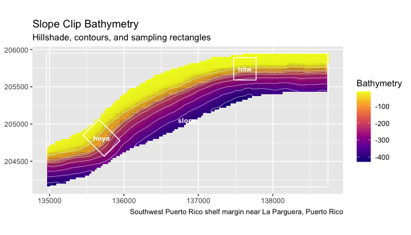
plot_bathy(
hitw,
contours = TRUE,
contour_interval = 25,
title = "Hole-in-the-Wall Bathymetry",
subtitle = "Reduced example raster with real local relief"
)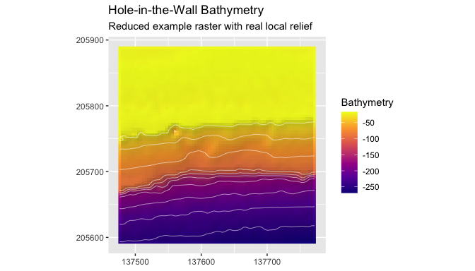
plot_bathy(
hoyo,
contours = TRUE,
contour_interval = 25,
vectors = hoyo_rect,
title = "El Hoyo Bathymetry",
subtitle = "Sampling rectangle over hillshaded bathymetry"
)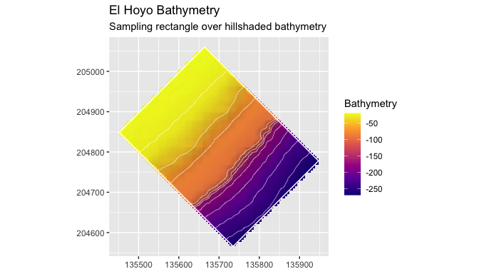
plot_metric(
hitw_metrics,
"slope_deg",
bathy = hitw_prepared,
contours = TRUE,
contour_interval = 25,
title = "Slope Over Hillshade",
legend_title = "Slope (degrees)"
)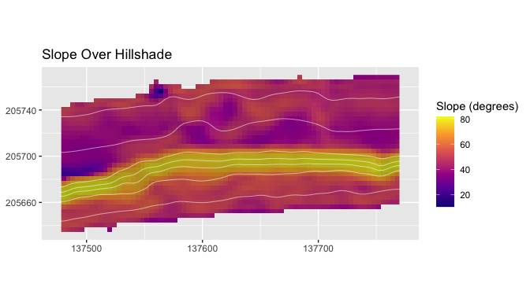
Process Groups
Process groups keep related terrain derivatives together so the analysis does not reduce seafloor structure to a single high-ranking variable. The group labels are interpretive categories. They do not claim to measure sediment transport, current velocity, or habitat condition directly; they organize terrain form in a way that can be summarized, compared, and modeled.
catalog <- metric_catalog()
catalog[, c("metric", "label", "process_group", "source_function")][1:8, ]
#> # A tibble: 8 × 4
#> metric label process_group source_function
#> <chr> <chr> <chr> <chr>
#> 1 bathy Bathymetry base_bathymetry as_bathy
#> 2 slope_deg Slope slope_gradient derive_slope
#> 3 slope_rad Slope slope_gradient derive_slope
#> 4 aspect_deg Aspect orientation derive_aspect
#> 5 aspect_rad Aspect orientation derive_aspect
#> 6 northness Northness orientation derive_northness
#> 7 eastness Eastness orientation derive_eastness
#> 8 hillshade Hillshade surface_structure derive_hillshade
process_groups()
#> [1] "base_bathymetry" "slope_gradient" "orientation"
#> [4] "surface_structure" "seafloor_rugosity" "seafloor_position"
#> [7] "curvature"
assign_process_groups(hitw_metrics)
#> # A tibble: 10 × 7
#> metric metric_standard label process_group description source_function
#> <chr> <chr> <chr> <chr> <chr> <chr>
#> 1 slope_deg slope_deg Slope slope_gradie… Local slop… derive_slope
#> 2 aspect_deg aspect_deg Aspe… orientation Local down… derive_aspect
#> 3 northness northness Nort… orientation Cosine tra… derive_northne…
#> 4 eastness eastness East… orientation Sine trans… derive_eastness
#> 5 tri tri Terr… seafloor_rug… Local terr… derive_tri
#> 6 rugosity_vrm… rugosity_vrm_3… Vect… seafloor_rug… Vector rug… derive_rugosity
#> 7 bpi_3x3 bpi_3x3 Fine… seafloor_pos… Fine-scale… derive_bpi
#> 8 bpi_11x11 bpi_11x11 Broa… seafloor_pos… Broad-scal… derive_bpi
#> 9 curvature curvature Curv… curvature Laplacian-… derive_curvatu…
#> 10 surface_area… surface_area_r… Surf… surface_stru… Approximat… derive_surface…
#> # ℹ 1 more variable: matched <lgl>
select_process_representatives(metrics_available = names(hitw_metrics))
#> # A tibble: 6 × 9
#> metric label process_group description units source_function
#> <chr> <chr> <chr> <chr> <chr> <chr>
#> 1 curvature Curvature curvature Laplacian-… inpu… derive_curvatu…
#> 2 aspect_deg Aspect orientation Local down… degr… derive_aspect
#> 3 bpi_11x11 Broad BPI seafloor_pos… Broad-scal… inpu… derive_bpi
#> 4 rugosity_vrm_3x3 Vector Rug… seafloor_rug… Vector rug… unit… derive_rugosity
#> 5 slope_deg Slope slope_gradie… Local slop… degr… derive_slope
#> 6 surface_area_ratio Surface Ar… surface_stru… Approximat… unit… derive_surface…
#> # ℹ 3 more variables: requires_optional_dependency <lgl>,
#> # scale_sensitive <lgl>, interpretation_notes <chr>
summarize_process_groups(hitw_metrics)
#> # A tibble: 6 × 3
#> process_group n_metrics metrics
#> <chr> <int> <chr>
#> 1 curvature 1 curvature
#> 2 orientation 3 aspect_deg, northness, eastness
#> 3 seafloor_position 2 bpi_3x3, bpi_11x11
#> 4 seafloor_rugosity 2 tri, rugosity_vrm_3x3
#> 5 slope_gradient 1 slope_deg
#> 6 surface_structure 1 surface_area_ratio
standardize_metric_names(c("Slope (deg)", "Broad BPI"))
#> [1] "slope_deg" "broad_bpi"
rename_metric_layers(c("old_slope", "old_bpi"), c(old_slope = "slope_deg"))
#> [1] "slope_deg" "old_bpi"Sampling Rectangles and Polygon Summaries
The sampling rectangles provide a compact example of zone-based terrain extraction. Each polygon is treated as a spatial sampling frame, and summary statistics are calculated from the raster cells inside that frame. This is useful when terrain conditions need to be compared across sites, mapped sectors, survey blocks, or habitat polygons.
slope_metrics <- derive_terrain(
slope,
metrics = c("slope", "tri", "bpi", "curvature")
)
sampling_summary <- summarize_terrain(
slope_metrics,
rectangles,
fun = c("mean", "sd", "min", "max")
)
sampling_summary[, c(
"site_id", "site_name", "feature_type",
"slope_deg_mean", "tri_mean", "bpi_3x3_mean"
)]
#> # A tibble: 3 × 6
#> site_id site_name feature_type slope_deg_mean tri_mean bpi_3x3_mean
#> <chr> <chr> <chr> <dbl> <dbl> <dbl>
#> 1 hitw Hole-in-the-Wall sampling_rectan… 31.6 12.9 0.223
#> 2 hoyo El Hoyo sampling_rectan… 26.9 8.94 0.230
#> 3 slope Slope Clip analysis_extent 27.7 9.66 -0.0384
summarize_terrain_by_zone(slope_metrics, rectangles, fun = "mean")
#> # A tibble: 3 × 13
#> site_id site_name feature_type source_name width_m height_m angle_deg zone_id
#> <chr> <chr> <chr> <chr> <dbl> <dbl> <dbl> <int>
#> 1 hitw Hole-in-t… sampling_re… Hole In th… 300 300 0 1
#> 2 hoyo El Hoyo sampling_re… Hoyo Terra… 300 400 135 2
#> 3 slope Slope Clip analysis_ex… Slope_clip… NaN NaN NaN 3
#> # ℹ 5 more variables: slope_deg_mean <dbl>, tri_mean <dbl>, bpi_3x3_mean <dbl>,
#> # bpi_11x11_mean <dbl>, curvature_mean <dbl>
plot_terrain_summary(
sampling_summary,
value = "slope_deg_mean",
group = "site_id"
)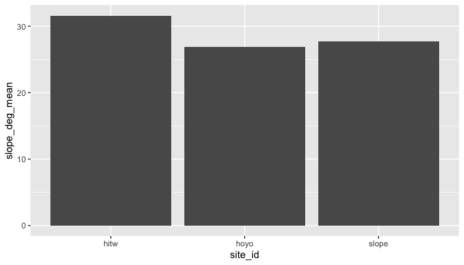
Depth-Band Summaries
Depth-band summaries divide the raster into interpretable vertical intervals. This is useful when terrain changes with depth or when observations are collected within fixed depth ranges. The breaks should be chosen to match the vertical convention of the input raster.
depth_bands <- summarize_depth_bands(
hitw_prepared,
metrics = hitw_metrics,
breaks = c(-220, -150, -100, -60, -30, -20)
)
depth_bands[depth_bands$metric == "slope_deg", ]
#> # A tibble: 5 × 8
#> depth_band metric n_cells mean sd min max median
#> <chr> <chr> <int> <dbl> <dbl> <dbl> <dbl> <dbl>
#> 1 [-220,-150) slope_deg 819 55.3 10.7 34.8 80.5 51.8
#> 2 [-150,-100) slope_deg 180 77.8 2.29 68.5 81.7 77.8
#> 3 [-100,-60) slope_deg 791 43.5 9.79 18.8 76.5 40.9
#> 4 [-60,-30) slope_deg 521 45.7 4.87 10.6 55.5 45.5
#> 5 [-30,-20] slope_deg 4 NA NA NA NA NA
positive_bands <- summarize_depth_bands(
set_depth_positive(hitw_prepared),
breaks = c(20, 30, 60, 100, 150, 220),
positive_depth = TRUE
)
positive_bands
#> # A tibble: 5 × 8
#> depth_band metric n_cells mean sd min max median
#> <chr> <chr> <int> <dbl> <dbl> <dbl> <dbl> <dbl>
#> 1 [20,30) bathy_m 4 28.9 1.23 27.2 30.0 29.2
#> 2 [30,60) bathy_m 521 45.5 8.29 30.2 59.9 45.8
#> 3 [60,100) bathy_m 791 77.8 10.3 60.1 99.9 77.6
#> 4 [100,150) bathy_m 180 123. 14.3 100. 150. 123.
#> 5 [150,220] bathy_m 819 193. 17.9 150. 218. 196.Transects and Cross-Sections
Transects convert the raster surface into cross-sectional profiles. They are useful for showing slope breaks, terraces, escarpments, and cross-shelf gradients that are not always obvious from cell-by-cell terrain metrics. When bathy is supplied and angle is left unset, make_transects() estimates the transect direction from the slope-weighted mean aspect of the clipped bathymetry. An explicit angle remains the correct choice when the analysis requires a fixed survey bearing.
hitw_transects <- make_transects(
hitw_rect,
spacing = 75,
bathy = hitw_prepared
)
class(hitw_transects)
#> [1] "SpatVector"
#> attr(,"package")
#> [1] "terra"
unique(as.data.frame(hitw_transects)[, c("angle_deg", "angle_source", "mean_aspect_deg")])
#> angle_deg angle_source mean_aspect_deg
#> 1 94.61515 surface 175.3849
manual_transects <- make_transects(
hitw_rect,
spacing = 75,
angle = 90
)
unique(as.data.frame(manual_transects)[, c("angle_deg", "angle_source")])
#> angle_deg angle_source
#> 1 90 manual
transect_samples <- sample_transects(hitw_transects, hitw_prepared, n = 12)
head(transect_samples)
#> # A tibble: 6 × 18
#> site_id site_name feature_type source_name width_m height_m angle_deg zone_id
#> <chr> <chr> <chr> <chr> <dbl> <dbl> <dbl> <chr>
#> 1 hitw Hole-in-t… sampling_re… Hole In th… 300 300 94.6 1
#> 2 hitw Hole-in-t… sampling_re… Hole In th… 300 300 94.6 1
#> 3 hitw Hole-in-t… sampling_re… Hole In th… 300 300 94.6 1
#> 4 hitw Hole-in-t… sampling_re… Hole In th… 300 300 94.6 1
#> 5 hitw Hole-in-t… sampling_re… Hole In th… 300 300 94.6 1
#> 6 hitw Hole-in-t… sampling_re… Hole In th… 300 300 94.6 1
#> # ℹ 10 more variables: offset <dbl>, angle_source <chr>, mean_aspect_deg <dbl>,
#> # orientation_weight <chr>, n_orientation_cells <int>, transect_id <chr>,
#> # distance <dbl>, x <dbl>, y <dbl>, bathy_m <dbl>
cross_sections <- extract_cross_sections(hitw_transects, hitw_prepared, n = 12)
summarize_cross_sections(cross_sections)
#> # A tibble: 4 × 6
#> transect_id bathy_m_mean bathy_m_sd bathy_m_min bathy_m_max bathy_m_median
#> <chr> <dbl> <dbl> <dbl> <dbl> <dbl>
#> 1 1_1 -102. 66.1 -197. -45.4 -83.3
#> 2 1_2 -108. 61.2 -192. -50.7 -95.1
#> 3 1_3 -127. 71.9 -216. -46.5 -107.
#> 4 1_4 -110. 71.7 -209. -37.3 -83.7
plot_transects(
hitw_prepared,
hitw_transects,
color_by = "transect_id",
show_legend = FALSE,
contour_interval = 25,
title = "Terrain-Oriented Transects Across Hole-in-the-Wall"
)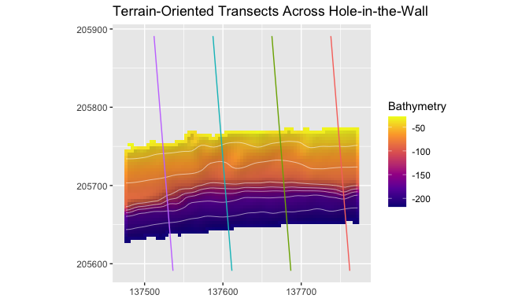
plot_cross_sections(
cross_sections,
value_col = "bathy_m",
show_legend = TRUE,
mean_profile = TRUE,
normalize_distance = TRUE,
title = "Hole-in-the-Wall Cross-Sections"
)
#> Warning: Removed 7 rows containing missing values or values outside the scale range
#> (`geom_line()`).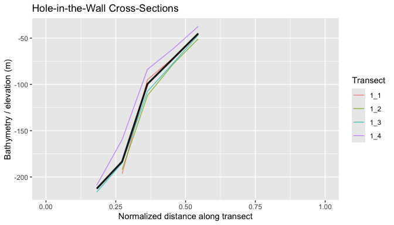
Isobaths and Isobath Corridors
Isobath corridors summarize terrain along depth horizons. This is useful when observations are collected along contours or when the analysis needs to compare terrain structure at equivalent depths while retaining along-contour variability.
hitw_isobaths <- extract_isobaths(hitw_prepared, depths = c(-50, -80, -120))
hitw_corridors <- make_isobath_corridors(
hitw_prepared,
depths = c(-50, -80, -120),
width = 20
)
class(hitw_isobaths)
#> [1] "SpatVector"
#> attr(,"package")
#> [1] "terra"
class(hitw_corridors)
#> [1] "SpatVector"
#> attr(,"package")
#> [1] "terra"
terra::geomtype(hitw_corridors)
#> [1] "polygons"
corridor_cells <- extract_isobath_corridors(hitw_metrics, hitw_corridors)
head(corridor_cells)
#> # A tibble: 6 × 15
#> ID level contour_value depth_label corridor_id slope_deg aspect_deg
#> <int> <dbl> <dbl> <dbl> <int> <dbl> <dbl>
#> 1 1 -50 -50 -50 1 NA NA
#> 2 1 -50 -50 -50 1 NA NA
#> 3 1 -50 -50 -50 1 NA NA
#> 4 1 -50 -50 -50 1 NA NA
#> 5 1 -50 -50 -50 1 NA NA
#> 6 1 -50 -50 -50 1 NA NA
#> # ℹ 8 more variables: northness <dbl>, eastness <dbl>, tri <dbl>,
#> # rugosity_vrm_3x3 <dbl>, bpi_3x3 <dbl>, bpi_11x11 <dbl>, curvature <dbl>,
#> # surface_area_ratio <dbl>
corridor_summary <- summarize_isobath_terrain(hitw_metrics, hitw_corridors)
corridor_summary[, c("contour_value", "slope_deg_mean", "bpi_3x3_mean")]
#> # A tibble: 3 × 3
#> contour_value slope_deg_mean bpi_3x3_mean
#> <dbl> <dbl> <dbl>
#> 1 -50 45.0 0.150
#> 2 -80 45.6 0.418
#> 3 -120 61.6 0.0736
plot_bathy(
hitw_prepared,
contours = TRUE,
contour_interval = 25,
vectors = hitw_isobaths,
vector_color = "black",
title = "Isobaths Over Hillshaded Bathymetry"
)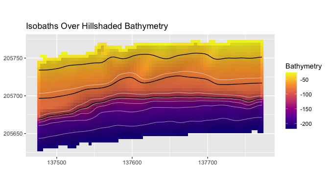
plot_isobath_corridors(
hitw_corridors,
hitw_prepared,
isobaths = hitw_isobaths,
background_contours = FALSE,
title = "Isobath Corridors and Source Isobaths"
)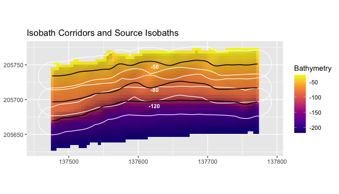
The black lines are the source isobaths. The corridor polygons buffer those depth horizons and define the terrain extraction zones.
Model-Ready Terrain Tables
Raster cells, points, and polygon summaries can be converted into tables for classification, ordination, regression, or other spatial modeling workflows. The helpers return standard tabular objects and leave model choice to the user.
terrain_cells <- sample_terrain_cells(
hitw_metrics,
size = 120,
method = "regular"
)
head(terrain_cells)
#> # A tibble: 6 × 12
#> x y slope_deg aspect_deg northness eastness tri rugosity_vrm_3x3
#> <dbl> <dbl> <dbl> <dbl> <dbl> <dbl> <dbl> <dbl>
#> 1 137484. 205636. 49.2 170. -0.985 0.172 3.66 0.00154
#> 2 137520. 205636. 35.5 166. -0.972 0.234 2.22 0.00365
#> 3 137484. 205652. 48.5 164. -0.963 0.270 3.60 0.00216
#> 4 137504. 205652. 50.3 168. -0.977 0.212 3.78 0.000161
#> 5 137520. 205652. 50.4 172. -0.991 0.137 3.75 0.000537
#> 6 137540. 205652. 52.0 171. -0.988 0.153 4.01 0.00171
#> # ℹ 4 more variables: bpi_3x3 <dbl>, bpi_11x11 <dbl>, curvature <dbl>,
#> # surface_area_ratio <dbl>
points <- terra::centroids(hitw_rect)
extract_terrain_points(hitw_metrics, points)
#> # A tibble: 1 × 17
#> site_id site_name feature_type source_name width_m height_m angle_deg
#> <chr> <chr> <chr> <chr> <dbl> <dbl> <dbl>
#> 1 hitw Hole-in-the-Wall sampling_rect… Hole In th… 300 300 0
#> # ℹ 10 more variables: slope_deg <dbl>, aspect_deg <dbl>, northness <dbl>,
#> # eastness <dbl>, tri <dbl>, rugosity_vrm_3x3 <dbl>, bpi_3x3 <dbl>,
#> # bpi_11x11 <dbl>, curvature <dbl>, surface_area_ratio <dbl>
model_matrix <- prepare_model_matrix(
terrain_cells,
vars = c("slope_deg", "tri", "bpi_3x3", "curvature"),
scale = TRUE
)
dim(model_matrix$x)
#> [1] 100 4PCA, Effect Size, and Correlation Helpers
These helpers make exploratory comparisons reproducible. PCA describes dominant covariation among metrics, effect sizes compare groups in the original metric units, and correlations identify redundant terrain derivatives.
hoyo_prepared <- prepare_bathy(hoyo, depth_range = c(-220, -25), smooth = TRUE)
hoyo_metrics <- derive_terrain(
hoyo_prepared,
metrics = c("slope", "tri", "bpi", "curvature")
)
hitw_cells <- sample_terrain_cells(
hitw_metrics[[c("slope_deg", "tri", "bpi_3x3", "curvature")]],
size = 40,
method = "regular"
)
hitw_cells$site <- "Hole-in-the-Wall"
hoyo_cells <- sample_terrain_cells(
hoyo_metrics[[c("slope_deg", "tri", "bpi_3x3", "curvature")]],
size = 40,
method = "regular"
)
hoyo_cells$site <- "El Hoyo"
comparison <- rbind(hitw_cells, hoyo_cells)
pca_set <- terrain_pca_by_group(
comparison,
group = "site",
vars = c("slope_deg", "tri", "bpi_3x3", "curvature")
)
pca_set$overall$variance
#> # A tibble: 4 × 3
#> component proportion cumulative
#> <chr> <dbl> <dbl>
#> 1 PC1 0.734 0.734
#> 2 PC2 0.234 0.968
#> 3 PC3 0.0323 1.000
#> 4 PC4 0.000144 1
pca_axis_labels(pca_set$overall)
#> PC1 PC2
#> "PC1 (73.4%; bpi_3x3, curvature)" "PC2 (23.4%; slope_deg, tri)"
terrain_effect_size(
comparison,
group = "site",
vars = c("slope_deg", "tri", "bpi_3x3", "curvature")
)
#> # A tibble: 4 × 7
#> variable group_1 group_2 mean_1 mean_2 effect_size method
#> <chr> <chr> <chr> <dbl> <dbl> <dbl> <chr>
#> 1 slope_deg Hole-in-the-Wall El Hoyo 53.4 30.1 1.53 cohens_d
#> 2 tri Hole-in-the-Wall El Hoyo 5.73 1.98 0.964 cohens_d
#> 3 bpi_3x3 Hole-in-the-Wall El Hoyo 0.434 -0.0869 0.524 cohens_d
#> 4 curvature Hole-in-the-Wall El Hoyo -1.30 0.237 -0.510 cohens_d
terrain_correlation(
comparison,
vars = c("slope_deg", "tri", "bpi_3x3", "curvature")
)
#> # A tibble: 6 × 3
#> var1 var2 correlation
#> <chr> <chr> <dbl>
#> 1 slope_deg tri 0.863
#> 2 slope_deg bpi_3x3 0.454
#> 3 tri bpi_3x3 0.560
#> 4 slope_deg curvature -0.443
#> 5 tri curvature -0.541
#> 6 bpi_3x3 curvature -0.999
balanced <- balance_samples(comparison, group = "site", seed = 42)
table(balanced$site)
#>
#> El Hoyo Hole-in-the-Wall
#> 21 21
plot_process_pca(
pca_set$overall,
color_col = "site",
title = "Overall Terrain PCA"
)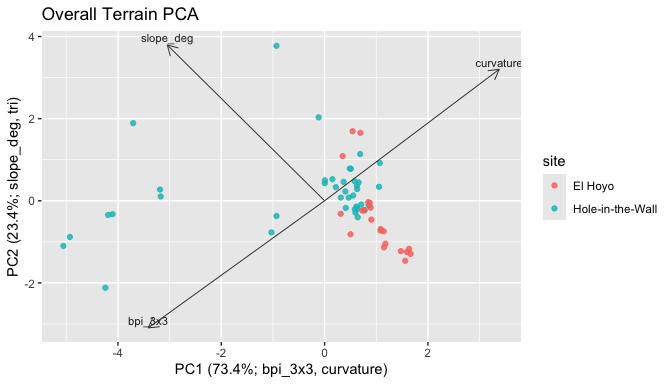
plot_process_pca(
pca_set$groups[["Hole-in-the-Wall"]],
title = "Hole-in-the-Wall Terrain PCA"
)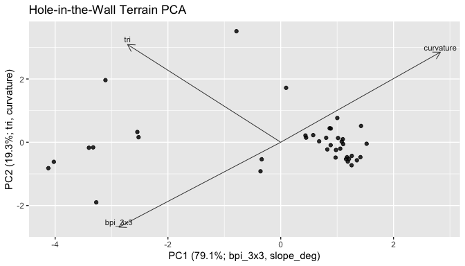
plot_process_pca(
pca_set$groups[["El Hoyo"]],
title = "El Hoyo Terrain PCA"
)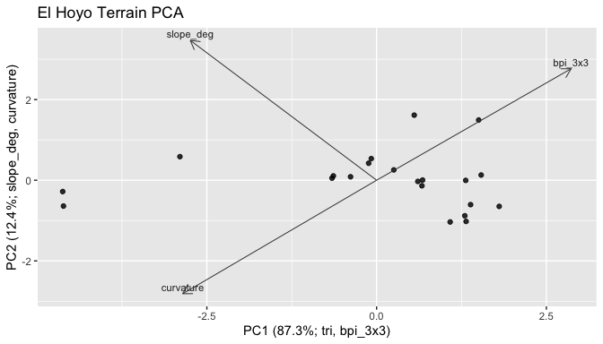
Plotting Guide
The plotting functions return ggplot objects. That keeps the default maps usable while allowing users to add themes, titles, annotations, or publication styling with normal ggplot2 code.
plot_metric_stack(hitw_metrics[[c("slope_deg", "tri", "bpi_3x3", "curvature")]])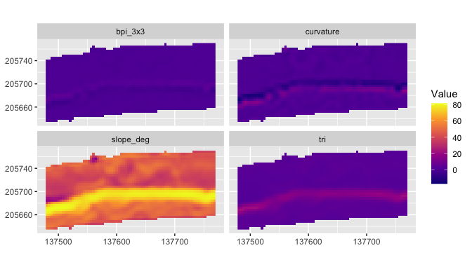
plot_metric(
hitw_metrics,
"rugosity_vrm_3x3",
bathy = hitw_prepared,
contours = TRUE,
contour_interval = 25,
title = "Rugosity Over Hillshade",
legend_title = "VRM"
)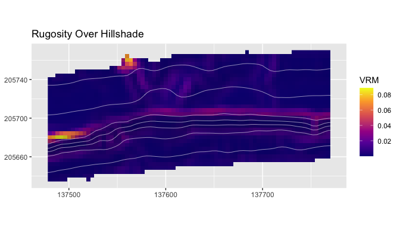
plot_metric(
hitw_metrics,
"bpi_3x3",
bathy = hitw_prepared,
contours = TRUE,
contour_interval = 25,
title = "BPI Over Hillshade",
legend_title = "BPI"
)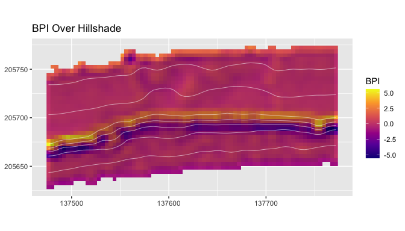
plot_metric(
hitw_metrics,
"curvature",
bathy = hitw_prepared,
contours = TRUE,
contour_interval = 25,
title = "Local Curvature Over Hillshade",
legend_title = "Curvature"
)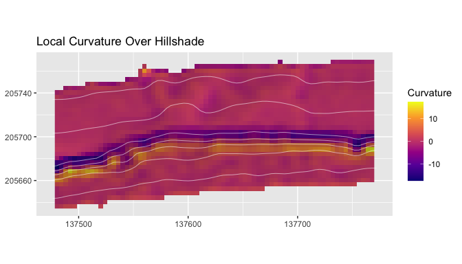
plot_metric(
hitw_metrics,
"surface_area_ratio",
bathy = hitw_prepared,
contours = TRUE,
contour_interval = 25,
title = "Surface Area Ratio Over Hillshade",
legend_title = "Ratio"
)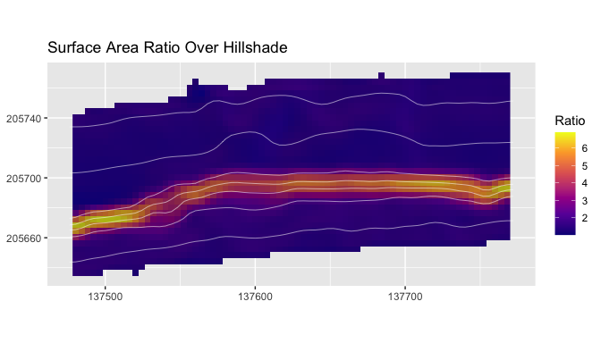
plot_process_density(comparison, value = "slope_deg", group = "site")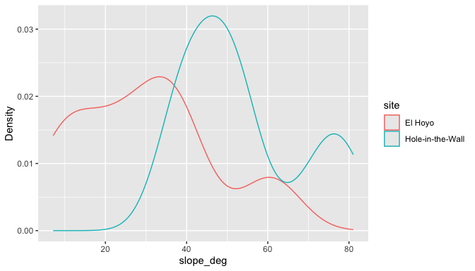
plot_depth_profile(
transect_samples[
transect_samples$transect_id == transect_samples$transect_id[1],
],
value_col = "bathy_m"
)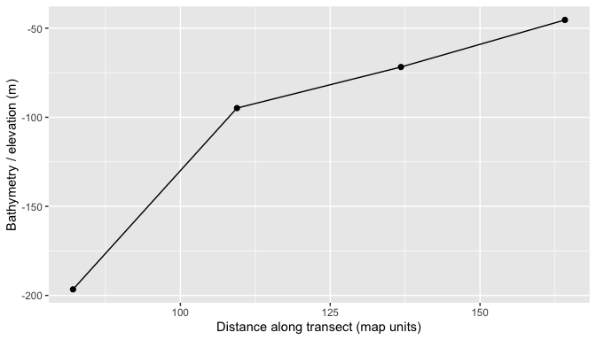
metric_transect_samples <- sample_transects(
hitw_transects,
hitw_metrics[["slope_deg"]],
n = 25
)
plot_depth_profile(
metric_transect_samples[
metric_transect_samples$transect_id == metric_transect_samples$transect_id[1],
],
value_col = "slope_deg",
title = "Slope Along One Transect"
)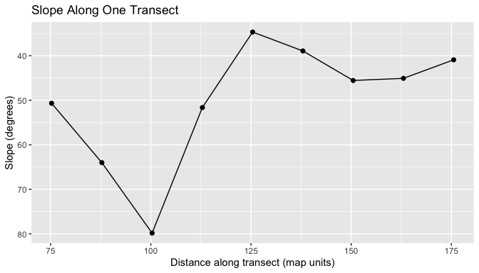
Custom Metrics and Process Groups
Custom metrics should be raster layers on the same grid, CRS, and extent as the metric stack they extend. This keeps polygon summaries, PCA tables, and process group assignments aligned cell by cell. A custom metric can come from a precomputed raster, a quoted expression using existing layers, or a function that returns a single-layer terra::SpatRaster.
renamed <- rename_metric_layers(
hitw_metrics,
c(slope_deg = "local_slope", bpi_3x3 = "fine_bpi")
)
names(renamed)[1:4]
#> [1] "local_slope" "aspect_deg" "northness" "eastness"
slope_tri <- derive_custom_metric(
hitw_metrics,
name = "slope_tri_index",
expression = quote(slope_deg * tri)
)
relief_index <- derive_custom_metric(
hitw_metrics,
name = "relief_index",
fun = function(r) {
out <- r[["tri"]] + abs(r[["bpi_3x3"]])
names(out) <- "relief_index"
out
}
)
extended_metrics <- add_metric_layers(
hitw_metrics,
slope_tri,
relief_index
)
names(extended_metrics)
#> [1] "slope_deg" "aspect_deg" "northness"
#> [4] "eastness" "tri" "rugosity_vrm_3x3"
#> [7] "bpi_3x3" "bpi_11x11" "curvature"
#> [10] "surface_area_ratio" "slope_tri_index" "relief_index"
custom_catalog <- extend_metric_catalog(
metric_catalog(),
create_metric_catalog(
metric = "slope_tri_index",
label = "Slope-TRI index",
process_group = "custom_relief",
description = "Product of local slope and terrain ruggedness index.",
units = "index",
source_function = "derive_custom_metric",
interpretation_notes = "Example index for documentation; users should define metrics that match their own process model."
),
create_metric_catalog(
metric = "relief_index",
label = "Relief index",
process_group = "custom_relief",
description = "Sum of TRI and absolute fine-scale BPI.",
units = "index",
source_function = "derive_custom_metric",
interpretation_notes = "Example index for documentation."
)
)
assign_process_groups(extended_metrics, catalog = custom_catalog)
#> # A tibble: 12 × 7
#> metric metric_standard label process_group description source_function
#> <chr> <chr> <chr> <chr> <chr> <chr>
#> 1 slope_deg slope_deg Slope slope_gradie… Local slop… derive_slope
#> 2 aspect_deg aspect_deg Aspe… orientation Local down… derive_aspect
#> 3 northness northness Nort… orientation Cosine tra… derive_northne…
#> 4 eastness eastness East… orientation Sine trans… derive_eastness
#> 5 tri tri Terr… seafloor_rug… Local terr… derive_tri
#> 6 rugosity_vrm… rugosity_vrm_3… Vect… seafloor_rug… Vector rug… derive_rugosity
#> 7 bpi_3x3 bpi_3x3 Fine… seafloor_pos… Fine-scale… derive_bpi
#> 8 bpi_11x11 bpi_11x11 Broa… seafloor_pos… Broad-scal… derive_bpi
#> 9 curvature curvature Curv… curvature Laplacian-… derive_curvatu…
#> 10 surface_area… surface_area_r… Surf… surface_stru… Approximat… derive_surface…
#> 11 slope_tri_in… slope_tri_index Slop… custom_relief Product of… derive_custom_…
#> 12 relief_index relief_index Reli… custom_relief Sum of TRI… derive_custom_…
#> # ℹ 1 more variable: matched <lgl>
summarize_process_groups(extended_metrics, catalog = custom_catalog)
#> # A tibble: 7 × 3
#> process_group n_metrics metrics
#> <chr> <int> <chr>
#> 1 curvature 1 curvature
#> 2 custom_relief 2 slope_tri_index, relief_index
#> 3 orientation 3 aspect_deg, northness, eastness
#> 4 seafloor_position 2 bpi_3x3, bpi_11x11
#> 5 seafloor_rugosity 2 tri, rugosity_vrm_3x3
#> 6 slope_gradient 1 slope_deg
#> 7 surface_structure 1 surface_area_ratio
plot_metric(
extended_metrics,
"slope_tri_index",
bathy = hitw_prepared,
hillshade = TRUE,
contours = TRUE,
contour_interval = 25,
title = "Custom Slope-TRI Index",
legend_title = "Index"
)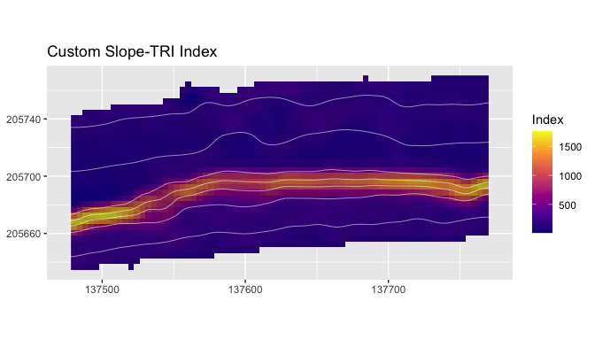
Function Cookbook
Input and validation functions
Use these functions when a raster enters the workflow. They return terra::SpatRaster objects or compact metadata tables.
hitw_file <- blueterra_example("hitw")
hitw_from_file <- read_bathy(hitw_file)
hitw_from_object <- as_bathy(hitw_from_file)
validate_bathy(hitw_from_object)
check_bathy_crs(hitw_from_object)
#> # A tibble: 1 × 4
#> has_crs is_lonlat is_projected crs
#> <lgl> <lgl> <lgl> <chr>
#> 1 TRUE FALSE TRUE "PROJCRS[\"NAD83 / Puerto Rico & Virgin Is.\",…
check_bathy_units(hitw_from_object, units = "m", positive_depth = FALSE)
#> # A tibble: 1 × 5
#> layer min max units positive_depth
#> <chr> <dbl> <dbl> <chr> <lgl>
#> 1 bathy_m -269. -16.6 m FALSE
bathy_info(hitw_from_object)
#> # A tibble: 1 × 13
#> layer nrow ncol ncell xmin xmax ymin ymax xres yres min max
#> <chr> <dbl> <dbl> <dbl> <dbl> <dbl> <dbl> <dbl> <dbl> <dbl> <dbl> <dbl>
#> 1 bathy_m 75 75 5625 137474. 1.38e5 2.06e5 2.06e5 4.00 4.00 -269. -16.6
#> # ℹ 1 more variable: crs <chr>
class(hitw_from_file)
#> [1] "SpatRaster"
#> attr(,"package")
#> [1] "terra"read_bathy() is the file-path entry point; as_bathy() is useful inside workflows that already hold a raster object.
Raster preparation functions
These functions make preprocessing choices explicit and return terra::SpatRaster objects.
prepare_bathy(hitw, depth_range = c(-180, -30))
#> class : SpatRaster
#> size : 28, 75, 1 (nrow, ncol, nlyr)
#> resolution : 3.996743, 3.996743 (x, y)
#> extent : 137474.2, 137774, 205658.4, 205770.3 (xmin, xmax, ymin, ymax)
#> coord. ref. : NAD83 / Puerto Rico & Virgin Is. (EPSG:32161)
#> source(s) : memory
#> varname : laparguera_hitw_bathy
#> name : bathy_m
#> min value : -179.884354
#> max value : -30.45825
crop_bathy(hitw, terra::ext(hitw_rect))
#> class : SpatRaster
#> size : 75, 75, 1 (nrow, ncol, nlyr)
#> resolution : 3.996743, 3.996743 (x, y)
#> extent : 137474.2, 137774, 205590.5, 205890.2 (xmin, xmax, ymin, ymax)
#> coord. ref. : NAD83 / Puerto Rico & Virgin Is. (EPSG:32161)
#> source : laparguera_hitw_bathy.tif
#> name : bathy_m
#> min value : -268.953094
#> max value : -16.631475
mask_bathy(hitw, hitw_rect)
#> class : SpatRaster
#> size : 75, 75, 1 (nrow, ncol, nlyr)
#> resolution : 3.996743, 3.996743 (x, y)
#> extent : 137474.2, 137774, 205590.5, 205890.2 (xmin, xmax, ymin, ymax)
#> coord. ref. : NAD83 / Puerto Rico & Virgin Is. (EPSG:32161)
#> source(s) : memory
#> varname : laparguera_hitw_bathy
#> name : bathy_m
#> min value : -268.953094
#> max value : -16.631475
resample_bathy(hitw, template)
#> class : SpatRaster
#> size : 38, 38, 1 (nrow, ncol, nlyr)
#> resolution : 7.993486, 7.993486 (x, y)
#> extent : 137474.2, 137778, 205586.5, 205890.2 (xmin, xmax, ymin, ymax)
#> coord. ref. : NAD83 / Puerto Rico & Virgin Is. (EPSG:32161)
#> source(s) : memory
#> name : bathy_m
#> min value : -264.672546
#> max value : -16.735676
project_bathy(template, terra::crs(hitw))
#> class : SpatRaster
#> size : 38, 38, 1 (nrow, ncol, nlyr)
#> resolution : 7.993486, 7.993486 (x, y)
#> extent : 137474.2, 137778, 205586.5, 205890.2 (xmin, xmax, ymin, ymax)
#> coord. ref. : NAD83 / Puerto Rico & Virgin Is. (EPSG:32161)
#> source(s) : memory
#> name : bathy_m
#> min value : -264.692688
#> max value : -16.673401
smooth_bathy(hitw, window = 3)
#> class : SpatRaster
#> size : 75, 75, 1 (nrow, ncol, nlyr)
#> resolution : 3.996743, 3.996743 (x, y)
#> extent : 137474.2, 137774, 205590.5, 205890.2 (xmin, xmax, ymin, ymax)
#> coord. ref. : NAD83 / Puerto Rico & Virgin Is. (EPSG:32161)
#> source(s) : memory
#> varname : laparguera_hitw_bathy
#> name : bathy_m
#> min value : -267.476662
#> max value : -16.719014
depth_filter(hitw, c(-180, -30))
#> class : SpatRaster
#> size : 28, 75, 1 (nrow, ncol, nlyr)
#> resolution : 3.996743, 3.996743 (x, y)
#> extent : 137474.2, 137774, 205658.4, 205770.3 (xmin, xmax, ymin, ymax)
#> coord. ref. : NAD83 / Puerto Rico & Virgin Is. (EPSG:32161)
#> source(s) : memory
#> varname : laparguera_hitw_bathy
#> name : bathy_m
#> min value : -179.884354
#> max value : -30.45825
invert_depth(hitw)
#> class : SpatRaster
#> size : 75, 75, 1 (nrow, ncol, nlyr)
#> resolution : 3.996743, 3.996743 (x, y)
#> extent : 137474.2, 137774, 205590.5, 205890.2 (xmin, xmax, ymin, ymax)
#> coord. ref. : NAD83 / Puerto Rico & Virgin Is. (EPSG:32161)
#> source(s) : memory
#> varname : laparguera_hitw_bathy
#> name : bathy_m
#> min value : 16.631475
#> max value : 268.953094
set_depth_positive(hitw)
#> class : SpatRaster
#> size : 75, 75, 1 (nrow, ncol, nlyr)
#> resolution : 3.996743, 3.996743 (x, y)
#> extent : 137474.2, 137774, 205590.5, 205890.2 (xmin, xmax, ymin, ymax)
#> coord. ref. : NAD83 / Puerto Rico & Virgin Is. (EPSG:32161)
#> source(s) : memory
#> varname : laparguera_hitw_bathy
#> name : bathy_m
#> min value : 16.631475
#> max value : 268.953094
set_depth_negative(positive_depth)
#> class : SpatRaster
#> size : 75, 75, 1 (nrow, ncol, nlyr)
#> resolution : 3.996743, 3.996743 (x, y)
#> extent : 137474.2, 137774, 205590.5, 205890.2 (xmin, xmax, ymin, ymax)
#> coord. ref. : NAD83 / Puerto Rico & Virgin Is. (EPSG:32161)
#> source(s) : memory
#> varname : laparguera_hitw_bathy
#> name : bathy_m
#> min value : -268.953094
#> max value : -16.631475The parameter variation is usually the analysis decision: target CRS, target resolution, depth interval, smoothing window, or sign convention.
Terrain metric functions
Each metric function returns a terra::SpatRaster. The stack helpers return a multi-layer SpatRaster with clean layer names.
derive_slope(hitw_prepared)
#> class : SpatRaster
#> size : 37, 75, 1 (nrow, ncol, nlyr)
#> resolution : 3.996743, 3.996743 (x, y)
#> extent : 137474.2, 137774, 205626.5, 205774.3 (xmin, xmax, ymin, ymax)
#> coord. ref. : NAD83 / Puerto Rico & Virgin Is. (EPSG:32161)
#> source(s) : memory
#> varname : laparguera_hitw_bathy
#> name : slope_deg
#> min value : 10.633082
#> max value : 81.670015
derive_aspect(hitw_prepared)
#> class : SpatRaster
#> size : 37, 75, 1 (nrow, ncol, nlyr)
#> resolution : 3.996743, 3.996743 (x, y)
#> extent : 137474.2, 137774, 205626.5, 205774.3 (xmin, xmax, ymin, ymax)
#> coord. ref. : NAD83 / Puerto Rico & Virgin Is. (EPSG:32161)
#> source(s) : memory
#> varname : laparguera_hitw_bathy
#> name : aspect_deg
#> min value : 87.129591
#> max value : 219.14099
derive_northness(hitw_prepared)
#> class : SpatRaster
#> size : 37, 75, 1 (nrow, ncol, nlyr)
#> resolution : 3.996743, 3.996743 (x, y)
#> extent : 137474.2, 137774, 205626.5, 205774.3 (xmin, xmax, ymin, ymax)
#> coord. ref. : NAD83 / Puerto Rico & Virgin Is. (EPSG:32161)
#> source(s) : memory
#> varname : laparguera_hitw_bathy
#> name : northness
#> min value : -1
#> max value : 0.050077
derive_eastness(hitw_prepared)
#> class : SpatRaster
#> size : 37, 75, 1 (nrow, ncol, nlyr)
#> resolution : 3.996743, 3.996743 (x, y)
#> extent : 137474.2, 137774, 205626.5, 205774.3 (xmin, xmax, ymin, ymax)
#> coord. ref. : NAD83 / Puerto Rico & Virgin Is. (EPSG:32161)
#> source(s) : memory
#> varname : laparguera_hitw_bathy
#> name : eastness
#> min value : -0.631231
#> max value : 0.998745
derive_hillshade(hitw_prepared)
#> class : SpatRaster
#> size : 37, 75, 1 (nrow, ncol, nlyr)
#> resolution : 3.996743, 3.996743 (x, y)
#> extent : 137474.2, 137774, 205626.5, 205774.3 (xmin, xmax, ymin, ymax)
#> coord. ref. : NAD83 / Puerto Rico & Virgin Is. (EPSG:32161)
#> source(s) : memory
#> varname : laparguera_hitw_bathy
#> name : hillshade
#> min value : -0.523672
#> max value : 0.619912
derive_roughness(hitw_prepared)
#> class : SpatRaster
#> size : 37, 75, 1 (nrow, ncol, nlyr)
#> resolution : 3.996743, 3.996743 (x, y)
#> extent : 137474.2, 137774, 205626.5, 205774.3 (xmin, xmax, ymin, ymax)
#> coord. ref. : NAD83 / Puerto Rico & Virgin Is. (EPSG:32161)
#> source(s) : memory
#> varname : laparguera_hitw_bathy
#> name : roughness
#> min value : 0
#> max value : 65.460165
derive_tri(hitw_prepared)
#> class : SpatRaster
#> size : 37, 75, 1 (nrow, ncol, nlyr)
#> resolution : 3.996743, 3.996743 (x, y)
#> extent : 137474.2, 137774, 205626.5, 205774.3 (xmin, xmax, ymin, ymax)
#> coord. ref. : NAD83 / Puerto Rico & Virgin Is. (EPSG:32161)
#> source(s) : memory
#> varname : laparguera_hitw_bathy
#> name : tri
#> min value : 1.047873
#> max value : 21.578462
derive_tpi(hitw_prepared)
#> class : SpatRaster
#> size : 37, 75, 1 (nrow, ncol, nlyr)
#> resolution : 3.996743, 3.996743 (x, y)
#> extent : 137474.2, 137774, 205626.5, 205774.3 (xmin, xmax, ymin, ymax)
#> coord. ref. : NAD83 / Puerto Rico & Virgin Is. (EPSG:32161)
#> source(s) : memory
#> varname : laparguera_hitw_bathy
#> name : tpi
#> min value : -6.241576
#> max value : 6.279038
derive_bpi(hitw_prepared, window = 5)
#> class : SpatRaster
#> size : 37, 75, 1 (nrow, ncol, nlyr)
#> resolution : 3.996743, 3.996743 (x, y)
#> extent : 137474.2, 137774, 205626.5, 205774.3 (xmin, xmax, ymin, ymax)
#> coord. ref. : NAD83 / Puerto Rico & Virgin Is. (EPSG:32161)
#> source(s) : memory
#> varname : laparguera_hitw_bathy
#> name : bpi_5x5
#> min value : -13.185123
#> max value : 13.613569
derive_multiscale_bpi(hitw_prepared, windows = c(3, 7))
#> class : SpatRaster
#> size : 37, 75, 2 (nrow, ncol, nlyr)
#> resolution : 3.996743, 3.996743 (x, y)
#> extent : 137474.2, 137774, 205626.5, 205774.3 (xmin, xmax, ymin, ymax)
#> coord. ref. : NAD83 / Puerto Rico & Virgin Is. (EPSG:32161)
#> source(s) : memory
#> varnames : laparguera_hitw_bathy
#> laparguera_hitw_bathy
#> names : bpi_3x3, bpi_7x7
#> min values : -5.548068, -18.969588
#> max values : 5.581367, 20.310758
derive_rugosity(hitw_prepared, window = 3)
#> class : SpatRaster
#> size : 37, 75, 1 (nrow, ncol, nlyr)
#> resolution : 3.996743, 3.996743 (x, y)
#> extent : 137474.2, 137774, 205626.5, 205774.3 (xmin, xmax, ymin, ymax)
#> coord. ref. : NAD83 / Puerto Rico & Virgin Is. (EPSG:32161)
#> source(s) : memory
#> varname : laparguera_hitw_bathy
#> name : rugosity_vrm_3x3
#> min value : 0.000016
#> max value : 0.088559
derive_curvature(hitw_prepared)
#> class : SpatRaster
#> size : 37, 75, 1 (nrow, ncol, nlyr)
#> resolution : 3.996743, 3.996743 (x, y)
#> extent : 137474.2, 137774, 205626.5, 205774.3 (xmin, xmax, ymin, ymax)
#> coord. ref. : NAD83 / Puerto Rico & Virgin Is. (EPSG:32161)
#> source(s) : memory
#> varname : laparguera_hitw_bathy
#> name : curvature
#> min value : -17.331033
#> max value : 17.263913
derive_surface_area_ratio(hitw_prepared)
#> class : SpatRaster
#> size : 37, 75, 1 (nrow, ncol, nlyr)
#> resolution : 3.996743, 3.996743 (x, y)
#> extent : 137474.2, 137774, 205626.5, 205774.3 (xmin, xmax, ymin, ymax)
#> coord. ref. : NAD83 / Puerto Rico & Virgin Is. (EPSG:32161)
#> source(s) : memory
#> varname : laparguera_hitw_bathy
#> name : surface_area_ratio
#> min value : 1.017471
#> max value : 6.902548
derive_metric_stack(hitw_prepared, metrics = c("slope", "bpi"))
#> class : SpatRaster
#> size : 37, 75, 3 (nrow, ncol, nlyr)
#> resolution : 3.996743, 3.996743 (x, y)
#> extent : 137474.2, 137774, 205626.5, 205774.3 (xmin, xmax, ymin, ymax)
#> coord. ref. : NAD83 / Puerto Rico & Virgin Is. (EPSG:32161)
#> source(s) : memory
#> varnames : laparguera_hitw_bathy
#> laparguera_hitw_bathy
#> laparguera_hitw_bathy
#> names : slope_deg, bpi_3x3, bpi_11x11
#> min values : 10.633082, -5.548068, -24.949998
#> max values : 81.670015, 5.581367, 29.158179
derive_terrain(hitw_prepared, metrics = c("slope", "tri", "bpi"))
#> class : SpatRaster
#> size : 37, 75, 4 (nrow, ncol, nlyr)
#> resolution : 3.996743, 3.996743 (x, y)
#> extent : 137474.2, 137774, 205626.5, 205774.3 (xmin, xmax, ymin, ymax)
#> coord. ref. : NAD83 / Puerto Rico & Virgin Is. (EPSG:32161)
#> source(s) : memory
#> varnames : laparguera_hitw_bathy
#> laparguera_hitw_bathy
#> laparguera_hitw_bathy
#> laparguera_hitw_bathy
#> names : slope_deg, tri, bpi_3x3, bpi_11x11
#> min values : 10.633082, 1.047873, -5.548068, -24.949998
#> max values : 81.670015, 21.578462, 5.581367, 29.158179Use smaller focal windows for fine features and larger windows for broader terrain position.
Process group functions
These functions return tibbles, character vectors, or renamed metric labels that keep terrain interpretation organized.
metric_catalog()
#> # A tibble: 16 × 9
#> metric label process_group description units source_function
#> <chr> <chr> <chr> <chr> <chr> <chr>
#> 1 bathy Bathymetry base_bathyme… Input bath… inpu… as_bathy
#> 2 slope_deg Slope slope_gradie… Local slop… degr… derive_slope
#> 3 slope_rad Slope slope_gradie… Local slop… radi… derive_slope
#> 4 aspect_deg Aspect orientation Local down… degr… derive_aspect
#> 5 aspect_rad Aspect orientation Local down… radi… derive_aspect
#> 6 northness Northness orientation Cosine tra… unit… derive_northne…
#> 7 eastness Eastness orientation Sine trans… unit… derive_eastness
#> 8 hillshade Hillshade surface_stru… Illuminati… rela… derive_hillsha…
#> 9 roughness Roughness seafloor_rug… Local rang… inpu… derive_roughne…
#> 10 tri Terrain R… seafloor_rug… Local terr… inpu… derive_tri
#> 11 tpi Topograph… seafloor_pos… Cell posit… inpu… derive_tpi
#> 12 bpi_3x3 Fine BPI seafloor_pos… Fine-scale… inpu… derive_bpi
#> 13 bpi_11x11 Broad BPI seafloor_pos… Broad-scal… inpu… derive_bpi
#> 14 curvature Curvature curvature Laplacian-… inpu… derive_curvatu…
#> 15 surface_area_ratio Surface A… surface_stru… Approximat… unit… derive_surface…
#> 16 rugosity_vrm_3x3 Vector Ru… seafloor_rug… Vector rug… unit… derive_rugosity
#> # ℹ 3 more variables: requires_optional_dependency <lgl>,
#> # scale_sensitive <lgl>, interpretation_notes <chr>
process_groups()
#> [1] "base_bathymetry" "slope_gradient" "orientation"
#> [4] "surface_structure" "seafloor_rugosity" "seafloor_position"
#> [7] "curvature"
assign_process_groups(hitw_metrics)
#> # A tibble: 10 × 7
#> metric metric_standard label process_group description source_function
#> <chr> <chr> <chr> <chr> <chr> <chr>
#> 1 slope_deg slope_deg Slope slope_gradie… Local slop… derive_slope
#> 2 aspect_deg aspect_deg Aspe… orientation Local down… derive_aspect
#> 3 northness northness Nort… orientation Cosine tra… derive_northne…
#> 4 eastness eastness East… orientation Sine trans… derive_eastness
#> 5 tri tri Terr… seafloor_rug… Local terr… derive_tri
#> 6 rugosity_vrm… rugosity_vrm_3… Vect… seafloor_rug… Vector rug… derive_rugosity
#> 7 bpi_3x3 bpi_3x3 Fine… seafloor_pos… Fine-scale… derive_bpi
#> 8 bpi_11x11 bpi_11x11 Broa… seafloor_pos… Broad-scal… derive_bpi
#> 9 curvature curvature Curv… curvature Laplacian-… derive_curvatu…
#> 10 surface_area… surface_area_r… Surf… surface_stru… Approximat… derive_surface…
#> # ℹ 1 more variable: matched <lgl>
assign_process_groups(extended_metrics, catalog = custom_catalog)
#> # A tibble: 12 × 7
#> metric metric_standard label process_group description source_function
#> <chr> <chr> <chr> <chr> <chr> <chr>
#> 1 slope_deg slope_deg Slope slope_gradie… Local slop… derive_slope
#> 2 aspect_deg aspect_deg Aspe… orientation Local down… derive_aspect
#> 3 northness northness Nort… orientation Cosine tra… derive_northne…
#> 4 eastness eastness East… orientation Sine trans… derive_eastness
#> 5 tri tri Terr… seafloor_rug… Local terr… derive_tri
#> 6 rugosity_vrm… rugosity_vrm_3… Vect… seafloor_rug… Vector rug… derive_rugosity
#> 7 bpi_3x3 bpi_3x3 Fine… seafloor_pos… Fine-scale… derive_bpi
#> 8 bpi_11x11 bpi_11x11 Broa… seafloor_pos… Broad-scal… derive_bpi
#> 9 curvature curvature Curv… curvature Laplacian-… derive_curvatu…
#> 10 surface_area… surface_area_r… Surf… surface_stru… Approximat… derive_surface…
#> 11 slope_tri_in… slope_tri_index Slop… custom_relief Product of… derive_custom_…
#> 12 relief_index relief_index Reli… custom_relief Sum of TRI… derive_custom_…
#> # ℹ 1 more variable: matched <lgl>
select_process_representatives(metrics_available = names(hitw_metrics))
#> # A tibble: 6 × 9
#> metric label process_group description units source_function
#> <chr> <chr> <chr> <chr> <chr> <chr>
#> 1 curvature Curvature curvature Laplacian-… inpu… derive_curvatu…
#> 2 aspect_deg Aspect orientation Local down… degr… derive_aspect
#> 3 bpi_11x11 Broad BPI seafloor_pos… Broad-scal… inpu… derive_bpi
#> 4 rugosity_vrm_3x3 Vector Rug… seafloor_rug… Vector rug… unit… derive_rugosity
#> 5 slope_deg Slope slope_gradie… Local slop… degr… derive_slope
#> 6 surface_area_ratio Surface Ar… surface_stru… Approximat… unit… derive_surface…
#> # ℹ 3 more variables: requires_optional_dependency <lgl>,
#> # scale_sensitive <lgl>, interpretation_notes <chr>
summarize_process_groups(hitw_metrics)
#> # A tibble: 6 × 3
#> process_group n_metrics metrics
#> <chr> <int> <chr>
#> 1 curvature 1 curvature
#> 2 orientation 3 aspect_deg, northness, eastness
#> 3 seafloor_position 2 bpi_3x3, bpi_11x11
#> 4 seafloor_rugosity 2 tri, rugosity_vrm_3x3
#> 5 slope_gradient 1 slope_deg
#> 6 surface_structure 1 surface_area_ratio
create_metric_catalog(metric = "custom_index", process_group = "custom_relief")
#> # A tibble: 1 × 9
#> metric label process_group description units source_function
#> <chr> <chr> <chr> <chr> <chr> <chr>
#> 1 custom_index custom_index custom_relief <NA> <NA> <NA>
#> # ℹ 3 more variables: requires_optional_dependency <lgl>,
#> # scale_sensitive <lgl>, interpretation_notes <chr>
extend_metric_catalog(metric_catalog(), create_metric_catalog("custom_index", process_group = "custom_relief"))
#> # A tibble: 17 × 9
#> metric label process_group description units source_function
#> <chr> <chr> <chr> <chr> <chr> <chr>
#> 1 bathy Bathymetry base_bathyme… Input bath… inpu… as_bathy
#> 2 slope_deg Slope slope_gradie… Local slop… degr… derive_slope
#> 3 slope_rad Slope slope_gradie… Local slop… radi… derive_slope
#> 4 aspect_deg Aspect orientation Local down… degr… derive_aspect
#> 5 aspect_rad Aspect orientation Local down… radi… derive_aspect
#> 6 northness Northness orientation Cosine tra… unit… derive_northne…
#> 7 eastness Eastness orientation Sine trans… unit… derive_eastness
#> 8 hillshade Hillshade surface_stru… Illuminati… rela… derive_hillsha…
#> 9 roughness Roughness seafloor_rug… Local rang… inpu… derive_roughne…
#> 10 tri Terrain R… seafloor_rug… Local terr… inpu… derive_tri
#> 11 tpi Topograph… seafloor_pos… Cell posit… inpu… derive_tpi
#> 12 bpi_3x3 Fine BPI seafloor_pos… Fine-scale… inpu… derive_bpi
#> 13 bpi_11x11 Broad BPI seafloor_pos… Broad-scal… inpu… derive_bpi
#> 14 curvature Curvature curvature Laplacian-… inpu… derive_curvatu…
#> 15 surface_area_ratio Surface A… surface_stru… Approximat… unit… derive_surface…
#> 16 rugosity_vrm_3x3 Vector Ru… seafloor_rug… Vector rug… unit… derive_rugosity
#> 17 custom_index custom_in… custom_relief <NA> <NA> <NA>
#> # ℹ 3 more variables: requires_optional_dependency <lgl>,
#> # scale_sensitive <lgl>, interpretation_notes <chr>
standardize_metric_names(c("Slope degrees", "BPI 3 x 3"))
#> [1] "slope_degrees" "bpi_3_x_3"
rename_metric_layers(c("slope_old", "bpi_old"), c(slope_old = "slope_deg"))
#> [1] "slope_deg" "bpi_old"Interpret process groups as terrain-form categories, not direct measurements of physical forcing.
Transects, isobaths, and summaries
These functions work with terra::SpatVector objects or local vector paths and return vectors, extracted cells, or summary tables.
estimate_surface_orientation(hitw_prepared, hitw_rect)
#> [1] 94.61515
make_transects(hitw_rect, spacing = 100, bathy = hitw_prepared)
#> class : SpatVector
#> geometry : lines
#> dimensions : 3, 14 (geometries, attributes)
#> extent : 137537.1, 137762, 205591, 205891 (xmin, xmax, ymin, ymax)
#> coord. ref. : NAD83 / Puerto Rico & Virgin Is. (EPSG:32161)
#> names : site_id site_name feature_type source_name width_m height_m angle_deg zone_id offset angle_source (and 4 more)
#> type : <chr> <chr> <chr> <chr> <num> <num> <num> <chr> <num> <chr>
#> values : hitw Hole-in-the-Wall sampling_recta~ Hole In the Wall 300 300 94.6151 1 -124.264 surface
#> hitw Hole-in-the-Wall sampling_recta~ Hole In the Wall 300 300 94.6151 1 -24.2641 surface
#> hitw Hole-in-the-Wall sampling_recta~ Hole In the Wall 300 300 94.6151 1 75.7359 surface
sample_transects(hitw_transects, hitw_prepared, n = 5)
#> # A tibble: 20 × 18
#> site_id site_name feature_type source_name width_m height_m angle_deg zone_id
#> <chr> <chr> <chr> <chr> <dbl> <dbl> <dbl> <chr>
#> 1 hitw Hole-in-… sampling_re… Hole In th… 300 300 94.6 1
#> 2 hitw Hole-in-… sampling_re… Hole In th… 300 300 94.6 1
#> 3 hitw Hole-in-… sampling_re… Hole In th… 300 300 94.6 1
#> 4 hitw Hole-in-… sampling_re… Hole In th… 300 300 94.6 1
#> 5 hitw Hole-in-… sampling_re… Hole In th… 300 300 94.6 1
#> 6 hitw Hole-in-… sampling_re… Hole In th… 300 300 94.6 1
#> 7 hitw Hole-in-… sampling_re… Hole In th… 300 300 94.6 1
#> 8 hitw Hole-in-… sampling_re… Hole In th… 300 300 94.6 1
#> 9 hitw Hole-in-… sampling_re… Hole In th… 300 300 94.6 1
#> 10 hitw Hole-in-… sampling_re… Hole In th… 300 300 94.6 1
#> 11 hitw Hole-in-… sampling_re… Hole In th… 300 300 94.6 1
#> 12 hitw Hole-in-… sampling_re… Hole In th… 300 300 94.6 1
#> 13 hitw Hole-in-… sampling_re… Hole In th… 300 300 94.6 1
#> 14 hitw Hole-in-… sampling_re… Hole In th… 300 300 94.6 1
#> 15 hitw Hole-in-… sampling_re… Hole In th… 300 300 94.6 1
#> 16 hitw Hole-in-… sampling_re… Hole In th… 300 300 94.6 1
#> 17 hitw Hole-in-… sampling_re… Hole In th… 300 300 94.6 1
#> 18 hitw Hole-in-… sampling_re… Hole In th… 300 300 94.6 1
#> 19 hitw Hole-in-… sampling_re… Hole In th… 300 300 94.6 1
#> 20 hitw Hole-in-… sampling_re… Hole In th… 300 300 94.6 1
#> # ℹ 10 more variables: offset <dbl>, angle_source <chr>, mean_aspect_deg <dbl>,
#> # orientation_weight <chr>, n_orientation_cells <int>, transect_id <chr>,
#> # distance <dbl>, x <dbl>, y <dbl>, bathy_m <dbl>
extract_cross_sections(hitw_transects, hitw_prepared, n = 5)
#> # A tibble: 20 × 18
#> site_id site_name feature_type source_name width_m height_m angle_deg zone_id
#> <chr> <chr> <chr> <chr> <dbl> <dbl> <dbl> <chr>
#> 1 hitw Hole-in-… sampling_re… Hole In th… 300 300 94.6 1
#> 2 hitw Hole-in-… sampling_re… Hole In th… 300 300 94.6 1
#> 3 hitw Hole-in-… sampling_re… Hole In th… 300 300 94.6 1
#> 4 hitw Hole-in-… sampling_re… Hole In th… 300 300 94.6 1
#> 5 hitw Hole-in-… sampling_re… Hole In th… 300 300 94.6 1
#> 6 hitw Hole-in-… sampling_re… Hole In th… 300 300 94.6 1
#> 7 hitw Hole-in-… sampling_re… Hole In th… 300 300 94.6 1
#> 8 hitw Hole-in-… sampling_re… Hole In th… 300 300 94.6 1
#> 9 hitw Hole-in-… sampling_re… Hole In th… 300 300 94.6 1
#> 10 hitw Hole-in-… sampling_re… Hole In th… 300 300 94.6 1
#> 11 hitw Hole-in-… sampling_re… Hole In th… 300 300 94.6 1
#> 12 hitw Hole-in-… sampling_re… Hole In th… 300 300 94.6 1
#> 13 hitw Hole-in-… sampling_re… Hole In th… 300 300 94.6 1
#> 14 hitw Hole-in-… sampling_re… Hole In th… 300 300 94.6 1
#> 15 hitw Hole-in-… sampling_re… Hole In th… 300 300 94.6 1
#> 16 hitw Hole-in-… sampling_re… Hole In th… 300 300 94.6 1
#> 17 hitw Hole-in-… sampling_re… Hole In th… 300 300 94.6 1
#> 18 hitw Hole-in-… sampling_re… Hole In th… 300 300 94.6 1
#> 19 hitw Hole-in-… sampling_re… Hole In th… 300 300 94.6 1
#> 20 hitw Hole-in-… sampling_re… Hole In th… 300 300 94.6 1
#> # ℹ 10 more variables: offset <dbl>, angle_source <chr>, mean_aspect_deg <dbl>,
#> # orientation_weight <chr>, n_orientation_cells <int>, transect_id <chr>,
#> # distance <dbl>, x <dbl>, y <dbl>, bathy_m <dbl>
summarize_cross_sections(cross_sections)
#> # A tibble: 4 × 6
#> transect_id bathy_m_mean bathy_m_sd bathy_m_min bathy_m_max bathy_m_median
#> <chr> <dbl> <dbl> <dbl> <dbl> <dbl>
#> 1 1_1 -102. 66.1 -197. -45.4 -83.3
#> 2 1_2 -108. 61.2 -192. -50.7 -95.1
#> 3 1_3 -127. 71.9 -216. -46.5 -107.
#> 4 1_4 -110. 71.7 -209. -37.3 -83.7
extract_isobaths(hitw_prepared, depths = c(-50, -80))
#> class : SpatVector
#> geometry : lines
#> dimensions : 2, 3 (geometries, attributes)
#> extent : 137476.2, 137772, 205696.8, 205756.6 (xmin, xmax, ymin, ymax)
#> coord. ref. : NAD83 / Puerto Rico & Virgin Is. (EPSG:32161)
#> names : level contour_value depth_label
#> type : <num> <num> <num>
#> values : -50 -50 -50
#> -80 -80 -80
make_isobath_corridors(hitw_prepared, depths = c(-50, -80), width = 20)
#> class : SpatVector
#> geometry : polygons
#> dimensions : 2, 4 (geometries, attributes)
#> extent : 137456.2, 137792, 205676.8, 205776.5 (xmin, xmax, ymin, ymax)
#> coord. ref. : NAD83 / Puerto Rico & Virgin Is. (EPSG:32161)
#> names : level contour_value depth_label corridor_id
#> type : <num> <num> <num> <int>
#> values : -50 -50 -50 1
#> -80 -80 -80 2
extract_isobath_corridors(hitw_metrics, hitw_corridors)
#> # A tibble: 2,295 × 15
#> ID level contour_value depth_label corridor_id slope_deg aspect_deg
#> <int> <dbl> <dbl> <dbl> <int> <dbl> <dbl>
#> 1 1 -50 -50 -50 1 NA NA
#> 2 1 -50 -50 -50 1 NA NA
#> 3 1 -50 -50 -50 1 NA NA
#> 4 1 -50 -50 -50 1 NA NA
#> 5 1 -50 -50 -50 1 NA NA
#> 6 1 -50 -50 -50 1 NA NA
#> 7 1 -50 -50 -50 1 NA NA
#> 8 1 -50 -50 -50 1 NA NA
#> 9 1 -50 -50 -50 1 NA NA
#> 10 1 -50 -50 -50 1 NA NA
#> # ℹ 2,285 more rows
#> # ℹ 8 more variables: northness <dbl>, eastness <dbl>, tri <dbl>,
#> # rugosity_vrm_3x3 <dbl>, bpi_3x3 <dbl>, bpi_11x11 <dbl>, curvature <dbl>,
#> # surface_area_ratio <dbl>
summarize_isobath_terrain(hitw_metrics, hitw_corridors)
#> # A tibble: 3 × 55
#> level contour_value depth_label corridor_id zone_id slope_deg_mean
#> <dbl> <dbl> <dbl> <int> <int> <dbl>
#> 1 -50 -50 -50 1 1 45.0
#> 2 -80 -80 -80 2 2 45.6
#> 3 -120 -120 -120 3 3 61.6
#> # ℹ 49 more variables: slope_deg_sd <dbl>, slope_deg_min <dbl>,
#> # slope_deg_max <dbl>, slope_deg_median <dbl>, aspect_deg_mean <dbl>,
#> # aspect_deg_sd <dbl>, aspect_deg_min <dbl>, aspect_deg_max <dbl>,
#> # aspect_deg_median <dbl>, northness_mean <dbl>, northness_sd <dbl>,
#> # northness_min <dbl>, northness_max <dbl>, northness_median <dbl>,
#> # eastness_mean <dbl>, eastness_sd <dbl>, eastness_min <dbl>,
#> # eastness_max <dbl>, eastness_median <dbl>, tri_mean <dbl>, tri_sd <dbl>, …
summarize_terrain(hitw_metrics, hitw_rect)
#> # A tibble: 1 × 58
#> site_id site_name feature_type source_name width_m height_m angle_deg zone_id
#> <chr> <chr> <chr> <chr> <dbl> <dbl> <dbl> <int>
#> 1 hitw Hole-in-t… sampling_re… Hole In th… 300 300 0 1
#> # ℹ 50 more variables: slope_deg_mean <dbl>, slope_deg_sd <dbl>,
#> # slope_deg_min <dbl>, slope_deg_max <dbl>, slope_deg_median <dbl>,
#> # aspect_deg_mean <dbl>, aspect_deg_sd <dbl>, aspect_deg_min <dbl>,
#> # aspect_deg_max <dbl>, aspect_deg_median <dbl>, northness_mean <dbl>,
#> # northness_sd <dbl>, northness_min <dbl>, northness_max <dbl>,
#> # northness_median <dbl>, eastness_mean <dbl>, eastness_sd <dbl>,
#> # eastness_min <dbl>, eastness_max <dbl>, eastness_median <dbl>, …
summarize_terrain_by_zone(slope_metrics, rectangles)
#> # A tibble: 3 × 33
#> site_id site_name feature_type source_name width_m height_m angle_deg zone_id
#> <chr> <chr> <chr> <chr> <dbl> <dbl> <dbl> <int>
#> 1 hitw Hole-in-t… sampling_re… Hole In th… 300 300 0 1
#> 2 hoyo El Hoyo sampling_re… Hoyo Terra… 300 400 135 2
#> 3 slope Slope Clip analysis_ex… Slope_clip… NaN NaN NaN 3
#> # ℹ 25 more variables: slope_deg_mean <dbl>, slope_deg_sd <dbl>,
#> # slope_deg_min <dbl>, slope_deg_max <dbl>, slope_deg_median <dbl>,
#> # tri_mean <dbl>, tri_sd <dbl>, tri_min <dbl>, tri_max <dbl>,
#> # tri_median <dbl>, bpi_3x3_mean <dbl>, bpi_3x3_sd <dbl>, bpi_3x3_min <dbl>,
#> # bpi_3x3_max <dbl>, bpi_3x3_median <dbl>, bpi_11x11_mean <dbl>,
#> # bpi_11x11_sd <dbl>, bpi_11x11_min <dbl>, bpi_11x11_max <dbl>,
#> # bpi_11x11_median <dbl>, curvature_mean <dbl>, curvature_sd <dbl>, …
summarize_depth_bands(hitw_prepared, breaks = c(-220, -100, -20))
#> # A tibble: 2 × 8
#> depth_band metric n_cells mean sd min max median
#> <chr> <chr> <int> <dbl> <dbl> <dbl> <dbl> <dbl>
#> 1 [-220,-100) bathy_m 999 -180. 31.9 -218. -100. -190.
#> 2 [-100,-20] bathy_m 1316 -64.9 18.6 -99.9 -27.2 -66.3Spacing, width, and contour depth are map-unit or vertical-unit decisions and should match the stored CRS and depth convention.
Modeling and plotting helpers
These helpers return tibbles, model matrices, PCA objects, or ggplot objects.
extract_terrain_points(hitw_metrics, terra::centroids(hitw_rect))
#> # A tibble: 1 × 17
#> site_id site_name feature_type source_name width_m height_m angle_deg
#> <chr> <chr> <chr> <chr> <dbl> <dbl> <dbl>
#> 1 hitw Hole-in-the-Wall sampling_rect… Hole In th… 300 300 0
#> # ℹ 10 more variables: slope_deg <dbl>, aspect_deg <dbl>, northness <dbl>,
#> # eastness <dbl>, tri <dbl>, rugosity_vrm_3x3 <dbl>, bpi_3x3 <dbl>,
#> # bpi_11x11 <dbl>, curvature <dbl>, surface_area_ratio <dbl>
sample_terrain_cells(hitw_metrics, size = 10, seed = 42)
#> # A tibble: 10 × 12
#> x y slope_deg aspect_deg northness eastness tri rugosity_vrm_3x3
#> <dbl> <dbl> <dbl> <dbl> <dbl> <dbl> <dbl> <dbl>
#> 1 137564. 2.06e5 75.5 161. -0.944 0.329 12.3 0.00724
#> 2 137540. 2.06e5 48.2 164. -0.961 0.278 3.49 0.00927
#> 3 137572. 2.06e5 78.6 165. -0.966 0.258 15.7 0.00234
#> 4 137728. 2.06e5 38.4 174. -0.994 0.106 2.45 0.000596
#> 5 137756. 2.06e5 63.3 178. -0.999 0.0319 6.27 0.0329
#> 6 137580. 2.06e5 71.6 176. -0.998 0.0624 9.15 0.00723
#> 7 137524. 2.06e5 44.8 166. -0.970 0.243 3.15 0.00382
#> 8 137492. 2.06e5 47.6 170. -0.984 0.178 3.46 0.00241
#> 9 137604. 2.06e5 53.8 172. -0.990 0.143 4.24 0.00414
#> 10 137568. 2.06e5 37.7 153. -0.893 0.450 2.44 0.0346
#> # ℹ 4 more variables: bpi_3x3 <dbl>, bpi_11x11 <dbl>, curvature <dbl>,
#> # surface_area_ratio <dbl>
terrain_pca(terrain_cells[, c("slope_deg", "tri", "bpi_3x3", "curvature")])
#> $scores
#> # A tibble: 100 × 5
#> row_id PC1 PC2 PC3 PC4
#> <int> <dbl> <dbl> <dbl> <dbl>
#> 1 1 0.352 0.736 0.169 -0.00942
#> 2 2 -0.124 1.56 -0.328 0.0748
#> 3 3 -0.221 0.251 0.134 0.0111
#> 4 4 -0.442 -0.122 0.195 -0.0215
#> 5 5 -0.0705 0.231 0.208 0.0314
#> 6 6 -0.348 -0.204 0.249 0.0124
#> 7 7 0.383 0.796 0.174 0.0231
#> 8 8 -0.621 0.370 -0.0515 0.00393
#> 9 9 0.0587 0.146 0.300 0.0163
#> 10 10 0.206 0.970 0.0431 -0.00602
#> # ℹ 90 more rows
#>
#> $loadings
#> # A tibble: 4 × 5
#> variable PC1 PC2 PC3 PC4
#> <chr> <dbl> <dbl> <dbl> <dbl>
#> 1 slope_deg 0.484 -0.519 0.705 0.0165
#> 2 tri 0.491 -0.506 -0.709 -0.0150
#> 3 bpi_3x3 -0.513 -0.487 -0.0229 0.707
#> 4 curvature 0.512 0.488 -0.00864 0.707
#>
#> $variance
#> # A tibble: 4 × 3
#> component proportion cumulative
#> <chr> <dbl> <dbl>
#> 1 PC1 0.647 0.647
#> 2 PC2 0.337 0.984
#> 3 PC3 0.0158 1.000
#> 4 PC4 0.000444 1
#>
#> $model
#> Standard deviations (1, .., p=4):
#> [1] 1.60861554 1.16084205 0.25105293 0.04212113
#>
#> Rotation (n x k) = (4 x 4):
#> PC1 PC2 PC3 PC4
#> slope_deg 0.4839159 -0.5188400 0.704526577 0.01651498
#> tri 0.4909682 -0.5056483 -0.709256942 -0.01498749
#> bpi_3x3 -0.5126137 -0.4866339 -0.022852027 0.70703071
#> curvature 0.5118622 0.4881723 -0.008641577 0.70683110
#>
#> $vars
#> [1] "slope_deg" "tri" "bpi_3x3" "curvature"
#>
#> $complete_rows
#> [1] TRUE TRUE TRUE TRUE TRUE TRUE TRUE TRUE TRUE TRUE TRUE TRUE TRUE TRUE TRUE
#> [16] TRUE TRUE TRUE TRUE TRUE TRUE TRUE TRUE TRUE TRUE TRUE TRUE TRUE TRUE TRUE
#> [31] TRUE TRUE TRUE TRUE TRUE TRUE TRUE TRUE TRUE TRUE TRUE TRUE TRUE TRUE TRUE
#> [46] TRUE TRUE TRUE TRUE TRUE TRUE TRUE TRUE TRUE TRUE TRUE TRUE TRUE TRUE TRUE
#> [61] TRUE TRUE TRUE TRUE TRUE TRUE TRUE TRUE TRUE TRUE TRUE TRUE TRUE TRUE TRUE
#> [76] TRUE TRUE TRUE TRUE TRUE TRUE TRUE TRUE TRUE TRUE TRUE TRUE TRUE TRUE TRUE
#> [91] TRUE TRUE TRUE TRUE TRUE TRUE TRUE TRUE TRUE TRUE
pca_axis_labels(pca_set$overall)
#> PC1 PC2
#> "PC1 (73.4%; bpi_3x3, curvature)" "PC2 (23.4%; slope_deg, tri)"
terrain_pca_by_group(comparison, group = "site", vars = c("slope_deg", "tri", "bpi_3x3", "curvature"))
#> $overall
#> $overall$scores
#> # A tibble: 60 × 6
#> row_id PC1 PC2 PC3 PC4 site
#> <int> <dbl> <dbl> <dbl> <dbl> <chr>
#> 1 1 0.00271 0.428 -0.308 -0.0102 Hole-in-the-Wall
#> 2 2 0.313 0.0785 -0.215 -0.0905 Hole-in-the-Wall
#> 3 3 -3.70 1.89 1.35 -0.00150 Hole-in-the-Wall
#> 4 4 -0.932 3.77 1.15 -0.000698 Hole-in-the-Wall
#> 5 5 -0.115 2.03 -0.0969 0.0347 Hole-in-the-Wall
#> 6 6 0.151 0.526 -0.309 -0.00717 Hole-in-the-Wall
#> 7 7 0.487 0.784 -0.247 0.00719 Hole-in-the-Wall
#> 8 8 0.00662 0.499 -0.327 0.0150 Hole-in-the-Wall
#> 9 9 0.218 0.331 -0.270 0.0175 Hole-in-the-Wall
#> 10 10 0.581 0.477 -0.211 0.00287 Hole-in-the-Wall
#> # ℹ 50 more rows
#>
#> $overall$loadings
#> # A tibble: 4 × 5
#> variable PC1 PC2 PC3 PC4
#> <chr> <dbl> <dbl> <dbl> <dbl>
#> 1 slope_deg -0.463 0.577 -0.672 0.0156
#> 2 tri -0.501 0.455 0.735 -0.0332
#> 3 bpi_3x3 -0.520 -0.471 -0.0300 0.712
#> 4 curvature 0.514 0.487 0.0802 0.701
#>
#> $overall$variance
#> # A tibble: 4 × 3
#> component proportion cumulative
#> <chr> <dbl> <dbl>
#> 1 PC1 0.734 0.734
#> 2 PC2 0.234 0.968
#> 3 PC3 0.0323 1.000
#> 4 PC4 0.000144 1
#>
#> $overall$model
#> Standard deviations (1, .., p=4):
#> [1] 1.71292914 0.96746341 0.35959847 0.02402639
#>
#> Rotation (n x k) = (4 x 4):
#> PC1 PC2 PC3 PC4
#> slope_deg -0.4632561 0.5772409 -0.67226726 0.01560311
#> tri -0.5008467 0.4553379 0.73533587 -0.03318226
#> bpi_3x3 -0.5195018 -0.4710937 -0.02998655 0.71224252
#> curvature 0.5144552 0.4873716 0.08024145 0.70097509
#>
#> $overall$vars
#> [1] "slope_deg" "tri" "bpi_3x3" "curvature"
#>
#> $overall$complete_rows
#> [1] TRUE TRUE TRUE TRUE TRUE TRUE TRUE TRUE TRUE TRUE TRUE TRUE TRUE TRUE TRUE
#> [16] TRUE TRUE TRUE TRUE TRUE TRUE TRUE TRUE TRUE TRUE TRUE TRUE TRUE TRUE TRUE
#> [31] TRUE TRUE TRUE TRUE TRUE TRUE TRUE TRUE TRUE TRUE TRUE TRUE TRUE TRUE TRUE
#> [46] TRUE TRUE TRUE TRUE TRUE TRUE TRUE TRUE TRUE TRUE TRUE TRUE TRUE TRUE TRUE
#>
#>
#> $groups
#> $groups$`El Hoyo`
#> $groups$`El Hoyo`$scores
#> # A tibble: 21 × 6
#> row_id PC1 PC2 PC3 PC4 site
#> <int> <dbl> <dbl> <dbl> <dbl> <chr>
#> 1 1 0.253 0.256 -0.0601 0.0100 El Hoyo
#> 2 2 1.54 0.129 0.0733 0.0174 El Hoyo
#> 3 3 -4.62 -0.281 0.207 -0.0289 El Hoyo
#> 4 4 -0.384 0.0859 -0.181 -0.0217 El Hoyo
#> 5 5 -0.0783 0.536 -0.0447 -0.0293 El Hoyo
#> 6 6 1.08 -1.03 0.00954 -0.0109 El Hoyo
#> 7 7 1.38 -0.605 0.0616 0.00889 El Hoyo
#> 8 8 -2.90 0.585 0.105 0.0356 El Hoyo
#> 9 9 -0.657 0.0513 -0.153 0.00799 El Hoyo
#> 10 10 1.81 -0.648 0.161 -0.0133 El Hoyo
#> # ℹ 11 more rows
#>
#> $groups$`El Hoyo`$loadings
#> # A tibble: 4 × 5
#> variable PC1 PC2 PC3 PC4
#> <chr> <dbl> <dbl> <dbl> <dbl>
#> 1 slope_deg -0.482 0.609 -0.617 -0.124
#> 2 tri -0.513 0.387 0.750 0.159
#> 3 bpi_3x3 0.503 0.485 -0.0577 0.713
#> 4 curvature -0.502 -0.494 -0.231 0.671
#>
#> $groups$`El Hoyo`$variance
#> # A tibble: 4 × 3
#> component proportion cumulative
#> <chr> <dbl> <dbl>
#> 1 PC1 0.873 0.873
#> 2 PC2 0.124 0.997
#> 3 PC3 0.00318 1.000
#> 4 PC4 0.0000774 1
#>
#> $groups$`El Hoyo`$model
#> Standard deviations (1, .., p=4):
#> [1] 1.86830682 0.70456919 0.11270360 0.01760044
#>
#> Rotation (n x k) = (4 x 4):
#> PC1 PC2 PC3 PC4
#> slope_deg -0.4820269 0.6090108 -0.6174660 -0.1244653
#> tri -0.5130162 0.3865783 0.7496345 0.1594355
#> bpi_3x3 0.5029299 0.4852718 -0.0576920 0.7129126
#> curvature -0.5015236 -0.4941400 -0.2312044 0.6714494
#>
#> $groups$`El Hoyo`$vars
#> [1] "slope_deg" "tri" "bpi_3x3" "curvature"
#>
#> $groups$`El Hoyo`$complete_rows
#> [1] TRUE TRUE TRUE TRUE TRUE TRUE TRUE TRUE TRUE TRUE TRUE TRUE TRUE TRUE TRUE
#> [16] TRUE TRUE TRUE TRUE TRUE TRUE
#>
#>
#> $groups$`Hole-in-the-Wall`
#> $groups$`Hole-in-the-Wall`$scores
#> # A tibble: 39 × 6
#> row_id PC1 PC2 PC3 PC4 site
#> <int> <dbl> <dbl> <dbl> <dbl> <chr>
#> 1 1 0.450 0.145 -0.253 -0.0153 Hole-in-the-Wall
#> 2 2 0.826 -0.228 -0.0147 -0.0773 Hole-in-the-Wall
#> 3 3 -3.11 1.96 0.759 0.00423 Hole-in-the-Wall
#> 4 4 -0.785 3.51 0.249 -0.0112 Hole-in-the-Wall
#> 5 5 0.0955 1.72 -0.515 0.0118 Hole-in-the-Wall
#> 6 6 0.576 0.225 -0.269 -0.0134 Hole-in-the-Wall
#> 7 7 0.867 0.442 -0.246 -0.00186 Hole-in-the-Wall
#> 8 8 0.438 0.213 -0.296 0.00489 Hole-in-the-Wall
#> 9 9 0.681 0.0286 -0.162 0.0100 Hole-in-the-Wall
#> 10 10 1.02 0.133 -0.105 -0.00184 Hole-in-the-Wall
#> # ℹ 29 more rows
#>
#> $groups$`Hole-in-the-Wall`$loadings
#> # A tibble: 4 × 5
#> variable PC1 PC2 PC3 PC4
#> <chr> <dbl> <dbl> <dbl> <dbl>
#> 1 slope_deg -0.503 0.463 -0.730 -0.00458
#> 2 tri -0.483 0.549 0.682 -0.0206
#> 3 bpi_3x3 -0.510 -0.477 0.0448 0.714
#> 4 curvature 0.503 0.506 -0.0305 0.700
#>
#> $groups$`Hole-in-the-Wall`$variance
#> # A tibble: 4 × 3
#> component proportion cumulative
#> <chr> <dbl> <dbl>
#> 1 PC1 0.791 0.791
#> 2 PC2 0.193 0.984
#> 3 PC3 0.0154 1.000
#> 4 PC4 0.000122 1
#>
#> $groups$`Hole-in-the-Wall`$model
#> Standard deviations (1, .., p=4):
#> [1] 1.77915117 0.87888221 0.24839162 0.02210872
#>
#> Rotation (n x k) = (4 x 4):
#> PC1 PC2 PC3 PC4
#> slope_deg -0.5032797 0.4627120 -0.72978497 -0.004583079
#> tri -0.4828993 0.5494592 0.68152810 -0.020551019
#> bpi_3x3 -0.5101358 -0.4771661 0.04477657 0.714191180
#> curvature 0.5032686 0.5062654 -0.03046964 0.699633911
#>
#> $groups$`Hole-in-the-Wall`$vars
#> [1] "slope_deg" "tri" "bpi_3x3" "curvature"
#>
#> $groups$`Hole-in-the-Wall`$complete_rows
#> [1] TRUE TRUE TRUE TRUE TRUE TRUE TRUE TRUE TRUE TRUE TRUE TRUE TRUE TRUE TRUE
#> [16] TRUE TRUE TRUE TRUE TRUE TRUE TRUE TRUE TRUE TRUE TRUE TRUE TRUE TRUE TRUE
#> [31] TRUE TRUE TRUE TRUE TRUE TRUE TRUE TRUE TRUE
terrain_effect_size(comparison, group = "site", vars = c("slope_deg", "tri"))
#> # A tibble: 2 × 7
#> variable group_1 group_2 mean_1 mean_2 effect_size method
#> <chr> <chr> <chr> <dbl> <dbl> <dbl> <chr>
#> 1 slope_deg Hole-in-the-Wall El Hoyo 53.4 30.1 1.53 cohens_d
#> 2 tri Hole-in-the-Wall El Hoyo 5.73 1.98 0.964 cohens_d
terrain_correlation(terrain_cells[, c("slope_deg", "tri", "bpi_3x3")])
#> # A tibble: 3 × 3
#> var1 var2 correlation
#> <chr> <chr> <dbl>
#> 1 slope_deg tri 0.937
#> 2 slope_deg bpi_3x3 -0.303
#> 3 tri bpi_3x3 -0.319
prepare_model_matrix(terrain_cells, vars = c("slope_deg", "tri"))
#> $x
#> slope_deg tri
#> [1,] 49.22131 3.655033
#> [2,] 35.53555 2.216408
#> [3,] 48.53633 3.602090
#> [4,] 50.29143 3.778023
#> [5,] 50.37710 3.751410
#> [6,] 52.00356 4.011178
#> [7,] 49.05671 3.564754
#> [8,] 43.30516 3.003612
#> [9,] 52.69241 3.946576
#> [10,] 45.40529 3.172553
#> [11,] 36.39630 2.269088
#> [12,] 35.09590 2.222560
#> [13,] 80.08801 18.303712
#> [14,] 81.67002 21.357051
#> [15,] 79.89227 17.312415
#> [16,] 70.81283 8.895432
#> [17,] 49.13471 3.692606
#> [18,] 53.93537 4.176288
#> [19,] 54.55880 4.236592
#> [20,] 48.86273 3.532824
#> [21,] 52.75806 4.047659
#> [22,] 52.89317 4.042651
#> [23,] 50.02787 3.710052
#> [24,] 51.14884 3.790538
#> [25,] 47.66665 3.414372
#> [26,] 46.87119 3.341227
#> [27,] 43.92735 2.992767
#> [28,] 49.79188 3.639455
#> [29,] 31.04468 1.808938
#> [30,] 26.85930 1.583151
#> [31,] 38.24002 2.446373
#> [32,] 67.07782 7.452875
#> [33,] 78.56703 15.513223
#> [34,] 77.89530 14.563315
#> [35,] 75.28839 11.592824
#> [36,] 77.30421 13.738417
#> [37,] 77.64843 13.822137
#> [38,] 77.26896 13.347224
#> [39,] 77.39414 13.546784
#> [40,] 77.82590 14.205062
#> [41,] 79.32782 15.930913
#> [42,] 80.08570 17.691255
#> [43,] 79.88841 17.742564
#> [44,] 81.50512 21.237063
#> [45,] 34.88487 2.162254
#> [46,] 34.01629 2.113310
#> [47,] 37.90655 2.426745
#> [48,] 47.21131 3.363953
#> [49,] 49.67808 3.682491
#> [50,] 47.58521 3.388292
#> [51,] 46.33709 3.281216
#> [52,] 45.62321 3.149753
#> [53,] 47.11388 3.278829
#> [54,] 46.17220 3.268771
#> [55,] 48.03619 3.424045
#> [56,] 51.87033 3.834848
#> [57,] 48.88185 3.620696
#> [58,] 45.78940 3.140556
#> [59,] 40.21921 2.567461
#> [60,] 39.44560 2.530415
#> [61,] 43.64634 2.916141
#> [62,] 42.95579 2.888391
#> [63,] 37.60221 2.407735
#> [64,] 38.94548 2.459064
#> [65,] 39.92914 2.582627
#> [66,] 40.28461 2.577538
#> [67,] 40.24879 2.628668
#> [68,] 38.15235 2.481956
#> [69,] 45.38453 3.203610
#> [70,] 47.25992 3.353605
#> [71,] 34.64780 2.143088
#> [72,] 36.74131 2.337519
#> [73,] 44.38915 3.093961
#> [74,] 38.43118 2.453699
#> [75,] 38.12070 2.386975
#> [76,] 39.09137 2.469918
#> [77,] 48.52340 3.511676
#> [78,] 51.86965 4.092080
#> [79,] 39.29628 2.624837
#> [80,] 46.28634 3.263666
#> [81,] 52.51891 4.121127
#> [82,] 43.24860 2.960689
#> [83,] 44.58014 3.115806
#> [84,] 48.00625 3.529812
#> [85,] 51.89493 3.932351
#> [86,] 48.20158 3.434108
#> [87,] 43.67843 3.021786
#> [88,] 44.87854 3.032824
#> [89,] 47.31773 3.287205
#> [90,] 46.00428 3.200094
#> [91,] 45.16081 3.003273
#> [92,] 53.39810 4.064891
#> [93,] 52.85676 4.130381
#> [94,] 47.72486 3.451756
#> [95,] 42.89171 2.948806
#> [96,] 52.56121 4.040430
#> [97,] 44.38953 3.137012
#> [98,] 43.13595 2.879061
#> [99,] 43.37973 2.836687
#> [100,] 43.42013 2.941682
#>
#> $y
#> NULL
#>
#> $data
#> # A tibble: 100 × 12
#> x y slope_deg aspect_deg northness eastness tri rugosity_vrm_3x3
#> <dbl> <dbl> <dbl> <dbl> <dbl> <dbl> <dbl> <dbl>
#> 1 137484. 2.06e5 49.2 170. -0.985 0.172 3.66 0.00154
#> 2 137520. 2.06e5 35.5 166. -0.972 0.234 2.22 0.00365
#> 3 137484. 2.06e5 48.5 164. -0.963 0.270 3.60 0.00216
#> 4 137504. 2.06e5 50.3 168. -0.977 0.212 3.78 0.000161
#> 5 137520. 2.06e5 50.4 172. -0.991 0.137 3.75 0.000537
#> 6 137540. 2.06e5 52.0 171. -0.988 0.153 4.01 0.00171
#> 7 137560. 2.06e5 49.1 178. -1.000 0.0276 3.56 0.00593
#> 8 137576. 2.06e5 43.3 162. -0.952 0.306 3.00 0.00114
#> 9 137596. 2.06e5 52.7 181. -1.000 -0.0203 3.95 0.00366
#> 10 137616. 2.06e5 45.4 173. -0.992 0.127 3.17 0.00199
#> # ℹ 90 more rows
#> # ℹ 4 more variables: bpi_3x3 <dbl>, bpi_11x11 <dbl>, curvature <dbl>,
#> # surface_area_ratio <dbl>
balance_samples(comparison, group = "site", seed = 42)
#> # A tibble: 42 × 7
#> x y slope_deg tri bpi_3x3 curvature site
#> <dbl> <dbl> <dbl> <dbl> <dbl> <dbl> <chr>
#> 1 135698. 204865. 38.5 2.30 -0.165 0.537 El Hoyo
#> 2 135586. 204753. 36.7 2.30 -0.0225 0.0208 El Hoyo
#> 3 135698. 204641. 31.2 1.87 -0.00338 0.0224 El Hoyo
#> 4 135526. 204809. 7.13 0.370 0.0960 -0.345 El Hoyo
#> 5 135754. 204697. 36.0 2.12 -0.137 0.401 El Hoyo
#> 6 135642. 204697. 18.1 0.942 0.182 -0.538 El Hoyo
#> 7 135754. 204865. 8.24 0.423 -0.0317 0.0878 El Hoyo
#> 8 135810. 204865. 31.6 1.85 0.377 -1.18 El Hoyo
#> 9 135754. 204753. 58.4 4.71 -0.454 1.31 El Hoyo
#> 10 135698. 204753. 12.0 0.616 0.0421 -0.135 El Hoyo
#> # ℹ 32 more rows
derive_custom_metric(hitw_metrics, "slope_tri_index", expression = quote(slope_deg * tri))
#> class : SpatRaster
#> size : 37, 75, 1 (nrow, ncol, nlyr)
#> resolution : 3.996743, 3.996743 (x, y)
#> extent : 137474.2, 137774, 205626.5, 205774.3 (xmin, xmax, ymin, ymax)
#> coord. ref. : NAD83 / Puerto Rico & Virgin Is. (EPSG:32161)
#> source(s) : memory
#> varname : laparguera_hitw_bathy
#> name : slope_tri_index
#> min value : 11.522078
#> max value : 1759.994854
add_metric_layers(hitw_metrics, slope_tri)
#> class : SpatRaster
#> size : 37, 75, 11 (nrow, ncol, nlyr)
#> resolution : 3.996743, 3.996743 (x, y)
#> extent : 137474.2, 137774, 205626.5, 205774.3 (xmin, xmax, ymin, ymax)
#> coord. ref. : NAD83 / Puerto Rico & Virgin Is. (EPSG:32161)
#> source(s) : memory
#> varnames : laparguera_hitw_bathy
#> laparguera_hitw_bathy
#> laparguera_hitw_bathy
#> laparguera_hitw_bathy
#> laparguera_hitw_bathy
#> ...
#> names : slope_deg, aspect_deg, northness, eastness, tri, rugos~m_3x3, ...
#> min values : 10.633082, 87.129591, -1, -0.631231, 1.047873, 0.000016, ...
#> max values : 81.670015, 219.14099, 0.050077, 0.998745, 21.578462, 0.088559, ...
invisible(list(
plot_bathy(hitw_prepared),
plot_metric(hitw_metrics, "slope_deg", bathy = hitw_prepared),
plot_terrain_map(hitw_prepared, hitw_metrics[["tri"]]),
plot_sampling_rectangles(slope, rectangles),
plot_transects(hitw_prepared, hitw_transects),
plot_isobath_corridors(hitw_corridors, hitw_prepared, isobaths = hitw_isobaths),
plot_cross_sections(cross_sections, value_col = "bathy_m"),
plot_depth_profile(transect_samples, value_col = "bathy_m"),
plot_metric_stack(hitw_metrics[[c("slope_deg", "tri")]]),
plot_process_density(comparison, value = "slope_deg", group = "site"),
plot_process_pca(pca_set$overall),
plot_terrain_summary(sampling_summary, value = "slope_deg_mean"),
plot_hillshade(hitw_prepared)
))The map helpers use hillshade as a visual layer and return standard ggplot objects for further styling.
Reproducibility
Examples and tests write only to temporary paths when an output file is needed. Distance-based operations such as transects and isobath corridors require a projected CRS with linear map units. Raster derivatives should be interpreted in relation to grid resolution, focal-window size, smoothing, and the vertical sign convention stored in the input raster.
Citation
citation("blueterra")
#> To cite package 'blueterra' in publications use:
#>
#> Cordero E (2026). _blueterra: Process-Oriented Geomorphometry for
#> Submerged Terrain_. R package version 0.1.0,
#> <https://github.com/el-cordero/blueterra>.
#>
#> A BibTeX entry for LaTeX users is
#>
#> @Manual{,
#> title = {blueterra: Process-Oriented Geomorphometry for Submerged Terrain},
#> author = {Elvin Cordero},
#> year = {2026},
#> note = {R package version 0.1.0},
#> url = {https://github.com/el-cordero/blueterra},
#> }